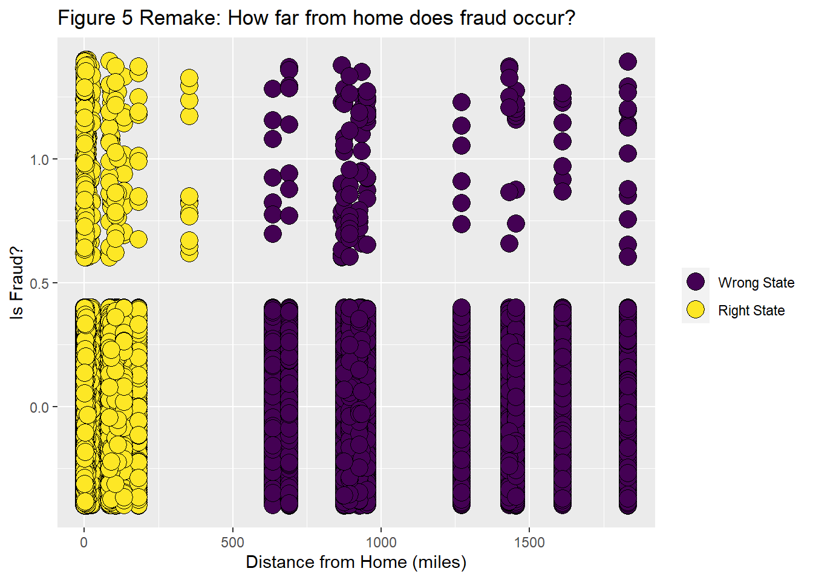

library(here)
# loading tidyverse/ tidymodels packages
library(tidyverse) #core tidyverse
# visualization
library(viridis) #color scheme that is colorblind friendly
library(ggthemes) # themes for ggplot
library(gt) # to make nice tables
#Geospatial Data
library(tidygeocoder) #converts city/state to lat/long
#library(sf) Geocoding Gone Wrong
R
mapping
geocoding
reverse geocoding
error checking
How I messed up my geocoding by not checking my work.
I’ve worked with a synthetic dataset on credit card fraud for a couple of projects, most notably my tidymodels and classification projects.
I’ve been working with this dataset again, and began to suspect some of my previous work was incorrect. Here I’m going to look at part of my previous analysis and do some simple checks (which I should have done before!) to show that this part of the previous work was wrong.
Previous Analysis
The dataset is one provided by Datacamp. The dataset (Credit Card Fraud) can also be found at the Datacamp workspace. To access the dataset and the data dictionary, you can create a new notebook on Datacamp using the Credit Card Fraud dataset. That will produce a notebook like this with the dataset and the data dictionary.
The dataset contains roughly 300,000 credit card transactions. It includes the city and state of the credit card holder; there are 177 unique city state combinations in the dataset.
I used the tidygeocoder package to convert this city, state information into latitude and longitude (this is in Code Block 13: Converting city/state data lat/long, in the Geographical Variables Section). I needed this data as lat/long so I could calculate the distance between the home address and the transaction location, which per the data dictionary was found in the lat and long variables. It turns out this isn’t the correct definition of lat and long, but I’ll cover that in a different post. This incorrect definition doesn’t impact the mistakes I made when geocoding.
So I calculated the distance and generated the following plot (For the code, see everything below Fig 4 in the Geographical Variables Section of my prior analysis.):

I had thought that most transactions would be close to home, so I was looking to see if fraud increased with distance. Upon reflection, this also isn’t the best visualization to answer that question, but it does illustrate that there are transactions over a wide range of distances.
Loading Libraries
Loading the necessary libraries.
Loading the data. This is a local copy that is part of the workspace download from Datacamp. If you want to follow along, the *.rmd file, which is executable R code as well as narrative, and the *csv files from my previous analysis are in the github repo for this website.
First, I’m importing both the credit card fraud dataset and the results from the 177 geocoded locations from my local version of the prior analysis. I’m using the here package to traverse my file structure; I’ve previously discussed why you should use here especially when using a mix of r script files and markdown files (rmd or quarto) in a project.
previous_data_folder <- "posts/2023-04-11-credit-card-fraud/datacamp_workspace/"
fraud_file <- "credit_card_fraud.csv"
geocoded_file <- "downloaded_coords.csv"
fraud <-
read_csv(here(previous_data_folder, fraud_file),
show_col_types = FALSE)
addresses_geocoded <-
read_csv(here(previous_data_folder, geocoded_file),
show_col_types = FALSE
) And my geocoded data file has some extra spaces in the strings, so I strip them out. This is my own fault; I constructed the combined city, state with some extraneous spaces. The latitude and longitude out of the geocoder are called lat and long; I’m going to rename them to lat_calc and long_calc since the fraud dataset already has variables named lat and long.
addresses_geocoded <-
addresses_geocoded %>%
mutate(address = str_replace_all(address, "\"", "")) %>%
rename(lat_calc = lat, long_calc = long)And this is what my previous geocoded data looks like:
addresses_geocoded %>%
gt() %>%
tab_options(container.height = px(300),
container.padding.y = px(24))| address | lat_calc | long_calc |
|---|---|---|
| Orient , WA | 41.2031 | -94.4165 |
| Malad City , ID | 42.1892 | -112.2475 |
| Grenada , CA | 41.6458 | -122.5230 |
| High Rolls Mountain Park , NM | 32.9501 | -105.8273 |
| Freedom , WY | 42.9827 | -111.0439 |
| Honokaa , HI | 20.0785 | -155.4689 |
| Valentine , NE | 42.8747 | -100.5506 |
| Westfir , OR | 43.7580 | -122.4947 |
| Thompson , UT | 40.8711 | -110.1824 |
| Conway , WA | 40.7492 | -94.6199 |
| Athena , OR | 45.8119 | -118.4913 |
| San Jose , CA | 37.3362 | -121.8906 |
| Ravenna , NE | 41.0254 | -98.9126 |
| Parks , AZ | 35.2606 | -111.9485 |
| Fort Washakie , WY | 43.0106 | -108.9410 |
| Littleton , CO | 39.6133 | -105.0166 |
| Meadville , MO | 39.7868 | -93.3015 |
| Moab , UT | 38.5738 | -109.5462 |
| Hawthorne , CA | 33.9189 | -118.3483 |
| Manville , WY | 42.7791 | -104.6177 |
| June Lake , CA | 37.7785 | -119.0763 |
| Sixes , OR | 42.8201 | -124.4832 |
| Holstein , NE | 40.4653 | -98.6520 |
| Westerville , NE | 41.3961 | -99.3809 |
| Ballwin , MO | 38.5936 | -90.5386 |
| Fields Landing , CA | 40.7252 | -124.2170 |
| Louisiana , MO | 39.4492 | -91.0466 |
| Kansas City , MO | 39.1001 | -94.5781 |
| Mesa , ID | 44.6288 | -116.4507 |
| Lonetree , WY | 41.0343 | -110.1434 |
| Centerview , MO | 38.7442 | -93.8452 |
| Colorado Springs , CO | 38.8340 | -104.8253 |
| Blairsden-Graeagle , CA | 39.7785 | -120.6213 |
| Cardwell , MO | 36.0470 | -90.2929 |
| Phoenix , AZ | 33.4484 | -112.0741 |
| Newhall , CA | 34.3799 | -118.5292 |
| Tomales , CA | 38.2468 | -122.9063 |
| Redford , MO | 37.3200 | -90.8985 |
| Weeping Water , NE | 40.8700 | -96.1406 |
| Portland , OR | 45.5202 | -122.6742 |
| Iliff , CO | 40.7592 | -103.0666 |
| Burlington , WA | 40.8127 | -91.1020 |
| Wales , AK | 65.6116 | -168.0797 |
| Mound City , MO | 40.1311 | -95.2316 |
| Greenview , CA | 54.5765 | -118.1486 |
| Lakeport , CA | 39.0430 | -122.9158 |
| Llano , NM | 36.1400 | -105.6817 |
| Carlotta , CA | 40.5374 | -124.0606 |
| Dumont , CO | 42.7502 | -92.9731 |
| Fullerton , NE | 41.3634 | -97.9689 |
| North Loup , NE | 41.4953 | -98.7731 |
| Browning , MO | 40.0353 | -93.1624 |
| Kent , OR | 45.1936 | -120.6961 |
| Fiddletown , CA | 38.5038 | -120.7555 |
| Huntington Beach , CA | 33.6783 | -118.0000 |
| Meridian , ID | 43.6086 | -116.3923 |
| Glendale , CA | 34.1469 | -118.2478 |
| Alva , WY | 44.6947 | -104.4413 |
| Blairstown , MO | 38.5558 | -93.9608 |
| Laguna Hills , CA | 33.5949 | -117.6882 |
| Albuquerque , NM | 35.0841 | -106.6510 |
| Azusa , CA | 34.1339 | -117.9056 |
| Gardiner , OR | 43.7301 | -124.1106 |
| Rock Springs , WY | 41.5861 | -109.2195 |
| Paauilo , HI | 20.0410 | -155.3669 |
| Eugene , OR | 44.0505 | -123.0951 |
| Daly City , CA | 37.6905 | -122.4727 |
| Mendon , UT | 41.7099 | -111.9777 |
| Powell Butte , OR | 45.4871 | -122.5040 |
| Utica , MO | 39.7436 | -93.6266 |
| Santa Monica , CA | 34.0195 | -118.4912 |
| Laramie , WY | 41.3114 | -105.5911 |
| Lagrange , WY | 35.0921 | -79.0110 |
| Brainard , NE | 41.1843 | -97.0024 |
| Humboldt , AZ | 34.5010 | -112.2392 |
| Corona , CA | 33.8753 | -117.5664 |
| Yellowstone National Park , WY | 44.6201 | -110.5607 |
| Shedd , OR | 44.4615 | -123.1104 |
| Independence , MO | 39.0925 | -94.4138 |
| Paradise Valley , AZ | 33.5428 | -111.9556 |
| Camden , MO | 38.0323 | -92.7638 |
| San Diego , CA | 32.7174 | -117.1628 |
| Kissee Mills , MO | 36.6837 | -93.0499 |
| Espanola , NM | 35.9911 | -106.0808 |
| Campbell , NE | 40.2983 | -98.7320 |
| Indian Wells , CA | 33.7218 | -116.3383 |
| Mountain Center , CA | 33.7152 | -116.7250 |
| Helm , CA | 36.5316 | -120.0982 |
| Lowell , OR | 43.9185 | -122.7837 |
| Lamy , NM | 35.4807 | -105.8802 |
| Hatch , UT | 37.6497 | -112.4344 |
| Oakland , CA | 37.8045 | -122.2714 |
| Parker Dam , CA | 34.2872 | -114.1430 |
| Rocky Mount , MO | 38.3277 | -92.6693 |
| Moriarty , NM | 34.9972 | -106.0495 |
| Hooper , NE | 41.6117 | -96.5477 |
| Cascade Locks , OR | 45.6695 | -121.8904 |
| Vinton , CA | 37.3823 | -120.6185 |
| Roseland , NE | 40.4713 | -98.5589 |
| Lake Oswego , OR | 45.4207 | -122.6706 |
| Parker , CO | 33.0556 | -96.6221 |
| Colton , WA | 46.5679 | -117.1283 |
| Kirtland Afb , NM | 35.0056 | -106.4680 |
| Riverton , WY | 43.0247 | -108.3807 |
| Sacramento , CA | 38.5811 | -121.4939 |
| Sun City , CA | 33.7010 | -117.2028 |
| Jelm , WY | 41.0578 | -106.0133 |
| Meredith , CO | 43.6579 | -71.5004 |
| Luray , MO | 40.4531 | -91.8818 |
| Smith River , CA | 41.9282 | -124.1470 |
| Superior , AZ | 33.2939 | -111.0962 |
| Red River , NM | 36.7021 | -105.3957 |
| Arvada , CO | 39.8006 | -105.0812 |
| Bay City , OR | 45.5226 | -123.8893 |
| Sutherland , NE | 41.1571 | -101.1262 |
| Owensville , MO | 38.3456 | -91.5015 |
| Altonah , UT | 40.4013 | -110.2938 |
| Pueblo , CO | 38.2544 | -104.6091 |
| Issaquah , WA | 47.5349 | -122.0433 |
| Saint Louis , MO | 38.6320 | -90.2429 |
| Wheaton , MO | 36.7628 | -94.0560 |
| Palmdale , CA | 34.5793 | -118.1171 |
| Burbank , WA | 46.2010 | -119.0134 |
| Jordan Valley , OR | 42.9752 | -117.0551 |
| Newberg , OR | 45.3003 | -122.9728 |
| American Fork , UT | 40.3768 | -111.7959 |
| Stayton , OR | 44.8007 | -122.7945 |
| Napa , CA | 38.2971 | -122.2855 |
| Norwalk , CA | 33.9093 | -118.0849 |
| Sprague , NE | 40.6258 | -96.7447 |
| Crownpoint , NM | 35.6873 | -108.1443 |
| Claremont , CA | 34.0967 | -117.7198 |
| Nelson , NE | 40.9453 | -96.7917 |
| Brashear , MO | 40.1489 | -92.3791 |
| Tekoa , WA | 47.2234 | -117.0709 |
| Red Cliff , CO | 46.8520 | -90.7903 |
| Omaha , NE | 41.2587 | -95.9384 |
| Arnold , MO | 38.4227 | -90.3758 |
| Odessa , MO | 38.9996 | -93.9540 |
| Woods Cross , UT | 40.8717 | -111.8926 |
| Broomfield , CO | 39.9404 | -105.0521 |
| Unionville , MO | 40.4770 | -93.0033 |
| Carroll , NE | 42.2768 | -97.1893 |
| Manley , NE | 40.9197 | -96.1661 |
| Matthews , MO | 36.7592 | -89.5867 |
| Syracuse , MO | 38.6700 | -92.8733 |
| Ruidoso , NM | 33.3316 | -105.6731 |
| Howells , NE | 41.7250 | -97.0028 |
| Ashford , WA | 46.7589 | -122.0316 |
| Huslia , AK | 65.7007 | -156.3953 |
| Port Costa , CA | 38.0448 | -122.1844 |
| Kirk , CO | 32.6484 | -115.9954 |
| Monitor , WA | 47.4869 | -120.4193 |
| Williamsburg , MO | 33.1163 | -107.2934 |
| Aurora , CO | 41.7572 | -88.3148 |
| Clarksville , MO | 39.3706 | -90.9051 |
| Scotts Mills , OR | 45.0433 | -122.6681 |
| Wendel , CA | 40.3482 | -120.2335 |
| Loving , NM | 32.2862 | -104.0958 |
| Los Angeles , CA | 34.0537 | -118.2428 |
| Vancouver , WA | 45.6307 | -122.6745 |
| Spirit Lake , ID | 47.9663 | -116.8685 |
| Vacaville , CA | 38.3566 | -121.9877 |
| La Grande , OR | 45.3246 | -118.0879 |
| Hubbell , NE | 40.0083 | -97.4976 |
| Mesa , AZ | 33.4151 | -111.8315 |
| Kaktovik , AK | 70.1263 | -143.6134 |
| Coulee Dam , WA | 47.9664 | -118.9759 |
| Downey , CA | 33.9404 | -118.1293 |
| Wappapello , MO | 36.9356 | -90.2709 |
| Seattle , WA | 47.6038 | -122.3301 |
| Pleasant Hill , MO | 38.7942 | -94.2477 |
| Buellton , CA | 34.6135 | -120.1937 |
| Angwin , CA | 38.5784 | -122.4487 |
| Kirtland , NM | 36.7425 | -108.3553 |
| Seligman , MO | 36.5208 | -93.9391 |
| Craig , AK | 55.4764 | -133.1483 |
The tidygeocoder package is a wrapper for geocoding queries to a variety of different services. I used the Nominatim service and I passed it an unstructured query. Looking at the API, you can pass it specific components (city, state, country) but I passed the combined string “city, state” as the address. I also chose full_results = FALSE, which just returned the coordinates, and nothing else.
Reverse Geocoding
Geocoding is getting coordinates from addresses; reverse geocoding is getting addresses from coordinates. Geocoding is likely more error prone than reverse geocoding. Geocoding requires parsing strings and matching them to the correct level of the hierarchy of information (does this string represent a city name, a country name, or some other organizational unit?). Reverse geocoding simply passes two numbers corresponding to latitude and longitude. Assuming you have your coordinates in the correct format for the geocoding service there should not be any ambiguity in the numbers. (In this project, I am working entirely in decimal degrees for the GPS data.)
So, I’m going to reverse geocode my calculated latitudes and longitudes and see if I recover my original city, state locations.
Below is the working code block to reverse geocode, but I’ve commented it out and worked from a saved file for the rest of this project. Many geocoding services (such as the Google API) charge per query, but even if the services doesn’t charge, you don’t want to continually query a service with the same data. The tidygeocoder package will handle duplicates in the dataset and not pass them on to the geocoder. I made my own list of unique locations since I want that data for other analysis.
I did choose full_results = TRUE. I thought this would be useful for understanding what was going on with the geocoding/ reverse geocoding.
# reverse_geo <- addresses_geocoded %>%
# reverse_geocode(
# lat = lat_calc,
# long = long_calc,
# address = addr,
# limit = 1,
# method = "osm",
# full_results = TRUE
# )This is the code block to save the output, also commented out since I already saved it.
# write_csv(reverse_geo, "home_coords.csv")Here I’m loading my saved copy.
reverse <- read_csv("home_coords.csv")Rows: 177 Columns: 40
── Column specification ────────────────────────────────────────────────────────
Delimiter: ","
chr (31): address, addr, licence, osm_type, class, type, addresstype, name, ...
dbl (8): lat_calc, long_calc, place_id, osm_id, osm_lat, osm_lon, place_ran...
lgl (1): boundingbox
ℹ Use `spec()` to retrieve the full column specification for this data.
ℹ Specify the column types or set `show_col_types = FALSE` to quiet this message.reverse %>%
gt() %>%
tab_options(container.height = px(300),
container.padding.y = px(24))| address | lat_calc | long_calc | addr | place_id | licence | osm_type | osm_id | osm_lat | osm_lon | class | type | place_rank | importance | addresstype | name | road | village | county | state | ISO3166-2-lvl4 | postcode | country | country_code | boundingbox | house_number | town | hamlet | shop | suburb | neighbourhood | city | amenity | building | quarter | leisure | residential | office | municipality | highway |
|---|---|---|---|---|---|---|---|---|---|---|---|---|---|---|---|---|---|---|---|---|---|---|---|---|---|---|---|---|---|---|---|---|---|---|---|---|---|---|---|
| Orient , WA | 41.2031 | -94.4165 | 1st Street, Orient, Adair County, Iowa, 50858, United States | 28430154 | Data © OpenStreetMap contributors, ODbL 1.0. http://osm.org/copyright | way | 274834814 | 41.20301 | -94.41650 | highway | residential | 26 | 0.1000100 | road | 1st Street | 1st Street | Orient | Adair County | Iowa | US-IA | 50858 | United States | us | NA | NA | NA | NA | NA | NA | NA | NA | NA | NA | NA | NA | NA | NA | NA | NA |
| Malad City , ID | 42.1892 | -112.2475 | 172, 100 West, Malad City, Oneida County, Idaho, 83252, United States | 355552161 | Data © OpenStreetMap contributors, ODbL 1.0. http://osm.org/copyright | way | 182612794 | 42.18922 | -112.24784 | place | house | 30 | 0.0000001 | place | NA | 100 West | NA | Oneida County | Idaho | US-ID | 83252 | United States | us | NA | 172 | Malad City | NA | NA | NA | NA | NA | NA | NA | NA | NA | NA | NA | NA | NA |
| Grenada , CA | 41.6458 | -122.5230 | 610, Shasta Boulevard, Grenada, Siskiyou County, California, 96038, United States | 312281253 | Data © OpenStreetMap contributors, ODbL 1.0. http://osm.org/copyright | way | 1124294414 | 41.64533 | -122.52352 | building | yes | 30 | 0.0000100 | building | NA | Shasta Boulevard | NA | Siskiyou County | California | US-CA | 96038 | United States | us | NA | 610 | NA | Grenada | NA | NA | NA | NA | NA | NA | NA | NA | NA | NA | NA | NA |
| High Rolls Mountain Park , NM | 32.9501 | -105.8273 | 927, US Highway 82, Mountain Park, High Rolls, Otero County, New Mexico, 88325, United States | 345384177 | Data © OpenStreetMap contributors, ODbL 1.0. http://osm.org/copyright | way | 229946028 | 32.94990 | -105.82709 | place | house | 30 | 0.0000001 | place | NA | US Highway 82 | High Rolls | Otero County | New Mexico | US-NM | 88325 | United States | us | NA | 927 | NA | Mountain Park | NA | NA | NA | NA | NA | NA | NA | NA | NA | NA | NA | NA |
| Freedom , WY | 42.9827 | -111.0439 | Wyoming State Highway 239, Freedom, Lincoln County, Wyoming, 83120, United States | 315824286 | Data © OpenStreetMap contributors, ODbL 1.0. http://osm.org/copyright | way | 965905172 | 42.98278 | -111.04379 | leisure | garden | 30 | 0.0000100 | leisure | NA | Wyoming State Highway 239 | NA | Lincoln County | Wyoming | US-WY | 83120 | United States | us | NA | NA | NA | Freedom | NA | NA | NA | NA | NA | NA | NA | NA | NA | NA | NA | NA |
| Honokaa , HI | 20.0785 | -155.4689 | Treasures, Mamane Street, Haina, Honoka'a, Hawaiʻi County, Hawaii, 96727, United States | 32739548 | Data © OpenStreetMap contributors, ODbL 1.0. http://osm.org/copyright | node | 5460602522 | 20.07921 | -155.46874 | shop | gift | 30 | 0.0000100 | shop | Treasures | Mamane Street | Honoka'a | Hawaiʻi County | Hawaii | US-HI | 96727 | United States | us | NA | NA | NA | NA | Treasures | Haina | NA | NA | NA | NA | NA | NA | NA | NA | NA | NA |
| Valentine , NE | 42.8747 | -100.5506 | 300, North Main Street, Sweetheart Trailer Court, Valentine, Cherry County, Nebraska, 69201, United States | 363390991 | Data © OpenStreetMap contributors, ODbL 1.0. http://osm.org/copyright | way | 14059873 | 42.87476 | -100.55057 | place | house | 30 | 0.0000001 | place | NA | North Main Street | NA | Cherry County | Nebraska | US-NE | 69201 | United States | us | NA | 300 | Valentine | Sweetheart Trailer Court | NA | NA | NA | NA | NA | NA | NA | NA | NA | NA | NA | NA |
| Westfir , OR | 43.7580 | -122.4947 | 47364, Westoak Road, Westfir, Oakridge, Lane County, Oregon, 97492, United States | 312371616 | Data © OpenStreetMap contributors, ODbL 1.0. http://osm.org/copyright | way | 1118816265 | 43.75803 | -122.49463 | building | yes | 30 | 0.0000100 | building | NA | Westoak Road | Oakridge | Lane County | Oregon | US-OR | 97492 | United States | us | NA | 47364 | NA | Westfir | NA | NA | NA | NA | NA | NA | NA | NA | NA | NA | NA | NA |
| Thompson , UT | 40.8711 | -110.1824 | Summit County, Utah, United States | 315365545 | Data © OpenStreetMap contributors, ODbL 1.0. http://osm.org/copyright | relation | 1416621 | 40.83209 | -111.12334 | boundary | administrative | 12 | 0.4683385 | county | Summit County | NA | NA | Summit County | Utah | US-UT | NA | United States | us | NA | NA | NA | NA | NA | NA | NA | NA | NA | NA | NA | NA | NA | NA | NA | NA |
| Conway , WA | 40.7492 | -94.6199 | 402, Broad Street, Conway, Taylor County, Iowa, 50833, United States | 337629286 | Data © OpenStreetMap contributors, ODbL 1.0. http://osm.org/copyright | way | 16036739 | 40.74923 | -94.61990 | place | house | 30 | 0.0000001 | place | NA | Broad Street | NA | Taylor County | Iowa | US-IA | 50833 | United States | us | NA | 402 | NA | Conway | NA | NA | NA | NA | NA | NA | NA | NA | NA | NA | NA | NA |
| Athena , OR | 45.8119 | -118.4913 | 245, East Main Street, Athena, Umatilla County, Oregon, 97813, United States | 364078723 | Data © OpenStreetMap contributors, ODbL 1.0. http://osm.org/copyright | way | 5699452 | 45.81181 | -118.49129 | place | house | 30 | 0.0000001 | place | NA | East Main Street | Athena | Umatilla County | Oregon | US-OR | 97813 | United States | us | NA | 245 | NA | NA | NA | NA | NA | NA | NA | NA | NA | NA | NA | NA | NA | NA |
| San Jose , CA | 37.3362 | -121.8906 | 2, North 1st Street, Saint James Square Historic District, Japantown, San Jose, Santa Clara County, California, 95113, United States | 310977365 | Data © OpenStreetMap contributors, ODbL 1.0. http://osm.org/copyright | node | 9592660092 | 37.33650 | -121.89058 | place | house | 30 | 0.0000100 | place | NA | North 1st Street | NA | Santa Clara County | California | US-CA | 95113 | United States | us | NA | 2 | NA | NA | NA | Japantown | Saint James Square Historic District | San Jose | NA | NA | NA | NA | NA | NA | NA | NA |
| Ravenna , NE | 41.0254 | -98.9126 | 100, East Genoa Street, Ravenna, Buffalo County, Nebraska, 68869, United States | 352990057 | Data © OpenStreetMap contributors, ODbL 1.0. http://osm.org/copyright | way | 208308981 | 41.02538 | -98.91255 | place | house | 30 | 0.0000001 | place | NA | East Genoa Street | NA | Buffalo County | Nebraska | US-NE | 68869 | United States | us | NA | 100 | Ravenna | NA | NA | NA | NA | NA | NA | NA | NA | NA | NA | NA | NA | NA |
| Parks , AZ | 35.2606 | -111.9485 | 699, Spring Valley Road, Parks, Coconino County, Arizona, 86018, United States | 353252094 | Data © OpenStreetMap contributors, ODbL 1.0. http://osm.org/copyright | way | 16871217 | 35.26066 | -111.94862 | place | house | 30 | 0.0000001 | place | NA | Spring Valley Road | Parks | Coconino County | Arizona | US-AZ | 86018 | United States | us | NA | 699 | NA | NA | NA | NA | NA | NA | NA | NA | NA | NA | NA | NA | NA | NA |
| Fort Washakie , WY | 43.0106 | -108.9410 | Shoyo Lane, Fort Washakie, Fremont County, Wyoming, United States | 315809492 | Data © OpenStreetMap contributors, ODbL 1.0. http://osm.org/copyright | way | 817685219 | 43.01080 | -108.94279 | highway | residential | 26 | 0.1000100 | road | Shoyo Lane | Shoyo Lane | Fort Washakie | Fremont County | Wyoming | US-WY | NA | United States | us | NA | NA | NA | NA | NA | NA | NA | NA | NA | NA | NA | NA | NA | NA | NA | NA |
| Littleton , CO | 39.6133 | -105.0166 | South Nevada Street, Littleton, Arapahoe County, Colorado, 80120, United States | 317326116 | Data © OpenStreetMap contributors, ODbL 1.0. http://osm.org/copyright | way | 60008583 | 39.61333 | -105.01666 | amenity | parking | 30 | 0.0000100 | amenity | NA | South Nevada Street | NA | Arapahoe County | Colorado | US-CO | 80120 | United States | us | NA | NA | Littleton | NA | NA | NA | NA | NA | NA | NA | NA | NA | NA | NA | NA | NA |
| Meadville , MO | 39.7868 | -93.3015 | 132, East Gentry Street, Meadville, Linn County, Missouri, 64659, United States | 346395052 | Data © OpenStreetMap contributors, ODbL 1.0. http://osm.org/copyright | way | 18570063 | 39.78712 | -93.30152 | place | house | 30 | 0.0000001 | place | NA | East Gentry Street | Meadville | Linn County | Missouri | US-MO | 64659 | United States | us | NA | 132 | NA | NA | NA | NA | NA | NA | NA | NA | NA | NA | NA | NA | NA | NA |
| Moab , UT | 38.5738 | -109.5462 | Moab City Hall, East Center Street, Moab, Grand County, Utah, 84532, United States | 317733039 | Data © OpenStreetMap contributors, ODbL 1.0. http://osm.org/copyright | way | 108693059 | 38.57377 | -109.54627 | amenity | townhall | 30 | 0.0000100 | amenity | Moab City Hall | East Center Street | NA | Grand County | Utah | US-UT | 84532 | United States | us | NA | NA | NA | NA | NA | NA | NA | Moab | Moab City Hall | NA | NA | NA | NA | NA | NA | NA |
| Hawthorne , CA | 33.9189 | -118.3483 | 12501, Freeman Avenue, Hawthorne, Los Angeles County, California, 90250, United States | 335270760 | Data © OpenStreetMap contributors, ODbL 1.0. http://osm.org/copyright | way | 4387641 | 33.91890 | -118.34831 | place | house | 30 | 0.0000001 | place | NA | Freeman Avenue | NA | Los Angeles County | California | US-CA | 90250 | United States | us | NA | 12501 | Hawthorne | NA | NA | NA | NA | NA | NA | NA | NA | NA | NA | NA | NA | NA |
| Manville , WY | 42.7791 | -104.6177 | 495, 7th Avenue, Manville, Niobrara County, Wyoming, 82227, United States | 362853281 | Data © OpenStreetMap contributors, ODbL 1.0. http://osm.org/copyright | way | 15751603 | 42.77904 | -104.61770 | place | house | 30 | 0.0000001 | place | NA | 7th Avenue | NA | Niobrara County | Wyoming | US-WY | 82227 | United States | us | NA | 495 | Manville | NA | NA | NA | NA | NA | NA | NA | NA | NA | NA | NA | NA | NA |
| June Lake , CA | 37.7785 | -119.0763 | Crawford Avenue, June Lake, Mono County, California, 93529, United States | 309689518 | Data © OpenStreetMap contributors, ODbL 1.0. http://osm.org/copyright | way | 1098913181 | 37.77840 | -119.07616 | amenity | parking | 30 | 0.0000100 | amenity | NA | Crawford Avenue | June Lake | Mono County | California | US-CA | 93529 | United States | us | NA | NA | NA | NA | NA | NA | NA | NA | NA | NA | NA | NA | NA | NA | NA | NA |
| Sixes , OR | 42.8201 | -124.4832 | Sixes Post Office, Oregon Coast Highway, Sixes, Curry County, Oregon, United States | 312410110 | Data © OpenStreetMap contributors, ODbL 1.0. http://osm.org/copyright | node | 357343806 | 42.82008 | -124.48317 | amenity | post_office | 30 | 0.0000100 | amenity | Sixes Post Office | Oregon Coast Highway | NA | Curry County | Oregon | US-OR | NA | United States | us | NA | NA | NA | Sixes | NA | NA | NA | NA | Sixes Post Office | NA | NA | NA | NA | NA | NA | NA |
| Holstein , NE | 40.4653 | -98.6520 | Holstein Post Office, Fillmore Street, Holstein, Adams County, Nebraska, 69850, United States | 316691988 | Data © OpenStreetMap contributors, ODbL 1.0. http://osm.org/copyright | node | 357789683 | 40.46531 | -98.65200 | amenity | post_office | 30 | 0.0000100 | amenity | Holstein Post Office | Fillmore Street | Holstein | Adams County | Nebraska | US-NE | 69850 | United States | us | NA | NA | NA | NA | NA | NA | NA | NA | Holstein Post Office | NA | NA | NA | NA | NA | NA | NA |
| Westerville , NE | 41.3961 | -99.3809 | Westerville Post Office, 453 Drive, Westerville, Custer County, Nebraska, 68881, United States | 316434363 | Data © OpenStreetMap contributors, ODbL 1.0. http://osm.org/copyright | node | 357781085 | 41.39612 | -99.38094 | amenity | post_office | 30 | 0.0000100 | amenity | Westerville Post Office | 453 Drive | NA | Custer County | Nebraska | US-NE | 68881 | United States | us | NA | NA | NA | Westerville | NA | NA | NA | NA | Westerville Post Office | NA | NA | NA | NA | NA | NA | NA |
| Ballwin , MO | 38.5936 | -90.5386 | 14811, Manchester Road, Ballwin, Saint Louis County, Missouri, 63011, United States | 322842479 | Data © OpenStreetMap contributors, ODbL 1.0. http://osm.org/copyright | node | 6955140353 | 38.59360 | -90.53850 | place | house | 30 | 0.0000100 | place | NA | Manchester Road | NA | Saint Louis County | Missouri | US-MO | 63011 | United States | us | NA | 14811 | Ballwin | NA | NA | NA | NA | NA | NA | NA | NA | NA | NA | NA | NA | NA |
| Fields Landing , CA | 40.7252 | -124.2170 | 363, Railroad Avenue, Fields Landing, Humboldt County, California, 95537, United States | 352708353 | Data © OpenStreetMap contributors, ODbL 1.0. http://osm.org/copyright | way | 10270302 | 40.72516 | -124.21701 | place | house | 30 | 0.0000001 | place | NA | Railroad Avenue | NA | Humboldt County | California | US-CA | 95537 | United States | us | NA | 363 | NA | Fields Landing | NA | NA | NA | NA | NA | NA | NA | NA | NA | NA | NA | NA |
| Louisiana , MO | 39.4492 | -91.0466 | 310, South Carolina Street, Louisiana, Pike County, Missouri, 63353, United States | 323335746 | Data © OpenStreetMap contributors, ODbL 1.0. http://osm.org/copyright | way | 1058729582 | 39.44889 | -91.04731 | building | yes | 30 | 0.0000100 | building | NA | South Carolina Street | Louisiana | Pike County | Missouri | US-MO | 63353 | United States | us | NA | 310 | NA | NA | NA | NA | NA | NA | NA | NA | NA | NA | NA | NA | NA | NA |
| Kansas City , MO | 39.1001 | -94.5781 | Central Downtown, Central Business District KC, Downtown Kansas City, Kansas City, Jackson County, Missouri, United States | 322530672 | Data © OpenStreetMap contributors, ODbL 1.0. http://osm.org/copyright | relation | 7733224 | 39.10038 | -94.57793 | highway | pedestrian | 26 | 0.1000100 | road | NA | NA | NA | Jackson County | Missouri | US-MO | NA | United States | us | NA | NA | NA | NA | NA | NA | Central Downtown | Downtown Kansas City | NA | NA | NA | NA | NA | NA | NA | NA |
| Mesa , ID | 44.6288 | -116.4507 | 1293, Mesa Road, Adams County, Idaho, 83643, United States | 337754330 | Data © OpenStreetMap contributors, ODbL 1.0. http://osm.org/copyright | way | 13728945 | 44.62879 | -116.45079 | place | house | 30 | 0.0000001 | place | NA | Mesa Road | NA | Adams County | Idaho | US-ID | 83643 | United States | us | NA | 1293 | NA | NA | NA | NA | NA | NA | NA | NA | NA | NA | NA | NA | NA | NA |
| Lonetree , WY | 41.0343 | -110.1434 | CR 295, Uinta County, Wyoming, 82936, United States | 372948622 | Data © OpenStreetMap contributors, ODbL 1.0. http://osm.org/copyright | way | 15788560 | 41.03193 | -110.14116 | highway | tertiary | 26 | 0.1000100 | road | CR 295 | CR 295 | NA | Uinta County | Wyoming | US-WY | 82936 | United States | us | NA | NA | NA | NA | NA | NA | NA | NA | NA | NA | NA | NA | NA | NA | NA | NA |
| Centerview , MO | 38.7442 | -93.8452 | 100, South Main Street, Centerview, Johnson County, Missouri, 64019, United States | 357359697 | Data © OpenStreetMap contributors, ODbL 1.0. http://osm.org/copyright | way | 18553959 | 38.74420 | -93.84528 | place | house | 30 | 0.0000001 | place | NA | South Main Street | Centerview | Johnson County | Missouri | US-MO | 64019 | United States | us | NA | 100 | NA | NA | NA | NA | NA | NA | NA | NA | NA | NA | NA | NA | NA | NA |
| Colorado Springs , CO | 38.8340 | -104.8253 | East Pikes Peak Avenue, Colorado Springs, El Paso County, Colorado, 80903, United States | 317418352 | Data © OpenStreetMap contributors, ODbL 1.0. http://osm.org/copyright | way | 877397971 | 38.83402 | -104.82530 | highway | unclassified | 26 | 0.1000100 | road | East Pikes Peak Avenue | East Pikes Peak Avenue | NA | El Paso County | Colorado | US-CO | 80903 | United States | us | NA | NA | NA | NA | NA | NA | NA | Colorado Springs | NA | NA | NA | NA | NA | NA | NA | NA |
| Blairsden-Graeagle , CA | 39.7785 | -120.6213 | CA 89, Feather River Park, Graeagle, Plumas County, California, 96103, United States | 309919813 | Data © OpenStreetMap contributors, ODbL 1.0. http://osm.org/copyright | way | 292902753 | 39.77850 | -120.62127 | highway | primary | 26 | 0.1000100 | road | CA 89 | CA 89 | Graeagle | Plumas County | California | US-CA | 96103 | United States | us | NA | NA | NA | Feather River Park | NA | NA | NA | NA | NA | NA | NA | NA | NA | NA | NA | NA |
| Cardwell , MO | 36.0470 | -90.2929 | 271, South Main Street, Cardwell, Dunklin County, Missouri, 63829, United States | 347956884 | Data © OpenStreetMap contributors, ODbL 1.0. http://osm.org/copyright | way | 52054574 | 36.04700 | -90.29331 | place | house | 30 | 0.0000001 | place | NA | South Main Street | Cardwell | Dunklin County | Missouri | US-MO | 63829 | United States | us | NA | 271 | NA | NA | NA | NA | NA | NA | NA | NA | NA | NA | NA | NA | NA | NA |
| Phoenix , AZ | 33.4484 | -112.0741 | 2, North Central Avenue, Phoenix, Maricopa County, Arizona, 85003, United States | 308127963 | Data © OpenStreetMap contributors, ODbL 1.0. http://osm.org/copyright | way | 209097278 | 33.44857 | -112.07422 | place | house | 30 | 0.0000100 | place | NA | North Central Avenue | NA | Maricopa County | Arizona | US-AZ | 85003 | United States | us | NA | 2 | NA | NA | NA | NA | NA | Phoenix | NA | NA | NA | NA | NA | NA | NA | NA |
| Newhall , CA | 34.3799 | -118.5292 | Main Street, Newhall, Santa Clarita, Los Angeles County, California, 91321, United States | 309417988 | Data © OpenStreetMap contributors, ODbL 1.0. http://osm.org/copyright | way | 1162662858 | 34.37986 | -118.52931 | amenity | parking | 30 | 0.0000100 | amenity | NA | Main Street | NA | Los Angeles County | California | US-CA | 91321 | United States | us | NA | NA | NA | NA | NA | Newhall | NA | Santa Clarita | NA | NA | NA | NA | NA | NA | NA | NA |
| Tomales , CA | 38.2468 | -122.9063 | 165, Valley Street, Tomales, Marin County, California, 94971, United States | 310111385 | Data © OpenStreetMap contributors, ODbL 1.0. http://osm.org/copyright | way | 1137675744 | 38.24738 | -122.90611 | office | telecommunication | 30 | 0.0000100 | office | NA | Valley Street | NA | Marin County | California | US-CA | 94971 | United States | us | NA | 165 | NA | Tomales | NA | NA | NA | NA | NA | NA | NA | NA | NA | NA | NA | NA |
| Redford , MO | 37.3200 | -90.8985 | 407, County Road 326, Redford, Reynolds County, Missouri, 63665, United States | 358007319 | Data © OpenStreetMap contributors, ODbL 1.0. http://osm.org/copyright | way | 18677680 | 37.31995 | -90.89854 | place | house | 30 | 0.0000001 | place | NA | County Road 326 | NA | Reynolds County | Missouri | US-MO | 63665 | United States | us | NA | 407 | NA | Redford | NA | NA | NA | NA | NA | NA | NA | NA | NA | NA | NA | NA |
| Weeping Water , NE | 40.8700 | -96.1406 | West Eldora Street, Weeping Water, Cass County, Nebraska, 68463, United States | 316490967 | Data © OpenStreetMap contributors, ODbL 1.0. http://osm.org/copyright | way | 14038263 | 40.86993 | -96.14060 | highway | residential | 26 | 0.1000100 | road | West Eldora Street | West Eldora Street | NA | Cass County | Nebraska | US-NE | 68463 | United States | us | NA | NA | Weeping Water | NA | NA | NA | NA | NA | NA | NA | NA | NA | NA | NA | NA | NA |
| Portland , OR | 45.5202 | -122.6742 | Concord Building, 208, Southwest Harvey Milk Street, Downtown, Portland, Multnomah County, Oregon, 97204, United States | 313762826 | Data © OpenStreetMap contributors, ODbL 1.0. http://osm.org/copyright | way | 382827814 | 45.51993 | -122.67386 | building | yes | 30 | 0.1580840 | building | Concord Building | Southwest Harvey Milk Street | NA | Multnomah County | Oregon | US-OR | 97204 | United States | us | NA | 208 | NA | NA | NA | Downtown | NA | Portland | NA | Concord Building | NA | NA | NA | NA | NA | NA |
| Iliff , CO | 40.7592 | -103.0666 | 114, South 4th Street, Iliff, Logan County, Colorado, 80736, United States | 352796937 | Data © OpenStreetMap contributors, ODbL 1.0. http://osm.org/copyright | way | 16989299 | 40.75915 | -103.06659 | place | house | 30 | 0.0000001 | place | NA | South 4th Street | Iliff | Logan County | Colorado | US-CO | 80736 | United States | us | NA | 114 | NA | NA | NA | NA | NA | NA | NA | NA | NA | NA | NA | NA | NA | NA |
| Burlington , WA | 40.8127 | -91.1020 | 306, Court Street, Burlington, Des Moines County, Iowa, 52601, United States | 360534180 | Data © OpenStreetMap contributors, ODbL 1.0. http://osm.org/copyright | way | 15882005 | 40.81264 | -91.10202 | place | house | 30 | 0.0000001 | place | NA | Court Street | NA | Des Moines County | Iowa | US-IA | 52601 | United States | us | NA | 306 | NA | NA | NA | NA | NA | Burlington | NA | NA | NA | NA | NA | NA | NA | NA |
| Wales , AK | 65.6116 | -168.0797 | Wales, Unorganized Borough, Alaska, 99783, United States | 32890610 | Data © OpenStreetMap contributors, ODbL 1.0. http://osm.org/copyright | way | 93703874 | 65.61496 | -168.07915 | highway | unclassified | 26 | 0.1000100 | road | NA | NA | Wales | Unorganized Borough | Alaska | US-AK | 99783 | United States | us | NA | NA | Wales | NA | NA | NA | NA | NA | NA | NA | NA | NA | NA | NA | NA | NA |
| Mound City , MO | 40.1311 | -95.2316 | 5th Street, Mound City, Holt County, Missouri, 64470, United States | 28361592 | Data © OpenStreetMap contributors, ODbL 1.0. http://osm.org/copyright | way | 18491433 | 40.13087 | -95.23150 | highway | primary | 26 | 0.1000100 | road | 5th Street | 5th Street | Mound City | Holt County | Missouri | US-MO | 64470 | United States | us | NA | NA | NA | NA | NA | NA | NA | NA | NA | NA | NA | NA | NA | NA | NA | NA |
| Greenview , CA | 54.5765 | -118.1486 | Municipal District of Greenview, Alberta, Canada | 30578760 | Data © OpenStreetMap contributors, ODbL 1.0. http://osm.org/copyright | relation | 8438253 | 54.74200 | -117.94550 | boundary | administrative | 12 | 0.3324222 | county | Municipal District of Greenview | NA | NA | Municipal District of Greenview | Alberta | CA-AB | NA | Canada | ca | NA | NA | NA | NA | NA | NA | NA | NA | NA | NA | NA | NA | NA | NA | NA | NA |
| Lakeport , CA | 39.0430 | -122.9158 | 173, 2nd Street, Lakeport, Lake County, California, 95453, United States | 350104633 | Data © OpenStreetMap contributors, ODbL 1.0. http://osm.org/copyright | way | 10265278 | 39.04306 | -122.91580 | place | house | 30 | 0.0000001 | place | NA | 2nd Street | NA | Lake County | California | US-CA | 95453 | United States | us | NA | 173 | Lakeport | NA | NA | NA | NA | NA | NA | NA | NA | NA | NA | NA | NA | NA |
| Llano , NM | 36.1400 | -105.6817 | 99, Piaza Road, Llano, Taos County, New Mexico, 87543, United States | 360755518 | Data © OpenStreetMap contributors, ODbL 1.0. http://osm.org/copyright | way | 14632432 | 36.14018 | -105.68201 | place | house | 30 | 0.0000001 | place | NA | Piaza Road | NA | Taos County | New Mexico | US-NM | 87543 | United States | us | NA | 99 | NA | Llano | NA | NA | NA | NA | NA | NA | NA | NA | NA | NA | NA | NA |
| Carlotta , CA | 40.5374 | -124.0606 | 5398, CA 36, Carlotta, Humboldt County, California, 95528, United States | 352704219 | Data © OpenStreetMap contributors, ODbL 1.0. http://osm.org/copyright | way | 867142665 | 40.53736 | -124.06087 | place | house | 30 | 0.0000001 | place | NA | CA 36 | NA | Humboldt County | California | US-CA | 95528 | United States | us | NA | 5398 | NA | Carlotta | NA | NA | NA | NA | NA | NA | NA | NA | NA | NA | NA | NA |
| Dumont , CO | 42.7502 | -92.9731 | 601, Main Street, Dumont, Butler County, Iowa, 50625, United States | 348816111 | Data © OpenStreetMap contributors, ODbL 1.0. http://osm.org/copyright | way | 15836960 | 42.75021 | -92.97311 | place | house | 30 | 0.0000001 | place | NA | Main Street | Dumont | Butler County | Iowa | US-IA | 50625 | United States | us | NA | 601 | NA | NA | NA | NA | NA | NA | NA | NA | NA | NA | NA | NA | NA | NA |
| Fullerton , NE | 41.3634 | -97.9689 | 400, 3rd Street, Fullerton, Nance County, Nebraska, 68638, United States | 350981390 | Data © OpenStreetMap contributors, ODbL 1.0. http://osm.org/copyright | way | 14167673 | 41.36341 | -97.96896 | place | house | 30 | 0.0000001 | place | NA | 3rd Street | NA | Nance County | Nebraska | US-NE | 68638 | United States | us | NA | 400 | Fullerton | NA | NA | NA | NA | NA | NA | NA | NA | NA | NA | NA | NA | NA |
| North Loup , NE | 41.4953 | -98.7731 | North Loup Post Office, 211, 1st Street, North Loup, Valley County, Nebraska, 68859, United States | 316427392 | Data © OpenStreetMap contributors, ODbL 1.0. http://osm.org/copyright | node | 357781401 | 41.49515 | -98.77350 | amenity | post_office | 30 | 0.0000100 | amenity | North Loup Post Office | 1st Street | North Loup | Valley County | Nebraska | US-NE | 68859 | United States | us | NA | 211 | NA | NA | NA | NA | NA | NA | North Loup Post Office | NA | NA | NA | NA | NA | NA | NA |
| Browning , MO | 40.0353 | -93.1624 | State Highway 5, Browning, Sullivan County, Missouri, 64630, United States | 322621809 | Data © OpenStreetMap contributors, ODbL 1.0. http://osm.org/copyright | way | 18569033 | 40.03532 | -93.16244 | highway | primary | 26 | 0.1000100 | road | State Highway 5 | State Highway 5 | Browning | Sullivan County | Missouri | US-MO | 64630 | United States | us | NA | NA | NA | NA | NA | NA | NA | NA | NA | NA | NA | NA | NA | NA | NA | NA |
| Kent , OR | 45.1936 | -120.6961 | Sherman Highway, Kent, Sherman County, Oregon, 97029, United States | 313496030 | Data © OpenStreetMap contributors, ODbL 1.0. http://osm.org/copyright | way | 5083705 | 45.19361 | -120.69590 | highway | trunk | 26 | 0.1000100 | road | Sherman Highway | Sherman Highway | NA | Sherman County | Oregon | US-OR | 97029 | United States | us | NA | NA | NA | Kent | NA | NA | NA | NA | NA | NA | NA | NA | NA | NA | NA | NA |
| Fiddletown , CA | 38.5038 | -120.7555 | 14541, Fiddletown Road, Plymouth, Amador County, California, 95629, United States | 336893666 | Data © OpenStreetMap contributors, ODbL 1.0. http://osm.org/copyright | way | 1154147354 | 38.50371 | -120.75552 | place | house | 30 | 0.0000001 | place | NA | Fiddletown Road | Plymouth | Amador County | California | US-CA | 95629 | United States | us | NA | 14541 | NA | NA | NA | NA | NA | NA | NA | NA | NA | NA | NA | NA | NA | NA |
| Huntington Beach , CA | 33.6783 | -118.0000 | Huntington Beach City Hall, 2000, Main Street, Huntington Beach, Orange County, California, 92648, United States | 306067174 | Data © OpenStreetMap contributors, ODbL 1.0. http://osm.org/copyright | way | 414904113 | 33.67757 | -118.00054 | amenity | townhall | 30 | 0.0000100 | amenity | Huntington Beach City Hall | Main Street | NA | Orange County | California | US-CA | 92648 | United States | us | NA | 2000 | NA | NA | NA | NA | NA | Huntington Beach | Huntington Beach City Hall | NA | NA | NA | NA | NA | NA | NA |
| Meridian , ID | 43.6086 | -116.3923 | East Bower Street, Meridian, Ada County, Idaho, 83642, United States | 314998395 | Data © OpenStreetMap contributors, ODbL 1.0. http://osm.org/copyright | way | 913605585 | 43.60836 | -116.39238 | amenity | parking | 30 | 0.0000100 | amenity | NA | East Bower Street | NA | Ada County | Idaho | US-ID | 83642 | United States | us | NA | NA | NA | NA | NA | NA | NA | Meridian | NA | NA | NA | NA | NA | NA | NA | NA |
| Glendale , CA | 34.1469 | -118.2478 | City of Glendale Municipal Services Building, 633, North Glendale Avenue, Glendale, Los Angeles County, California, 91206, United States | 309185745 | Data © OpenStreetMap contributors, ODbL 1.0. http://osm.org/copyright | relation | 6945224 | 34.14677 | -118.24727 | building | civic | 30 | 0.0000100 | building | City of Glendale Municipal Services Building | North Glendale Avenue | NA | Los Angeles County | California | US-CA | 91206 | United States | us | NA | 633 | NA | NA | NA | NA | NA | Glendale | NA | City of Glendale Municipal Services Building | NA | NA | NA | NA | NA | NA |
| Alva , WY | 44.6947 | -104.4413 | 5, WY 24, Alva, Crook County, Wyoming, 82711, United States | 347839277 | Data © OpenStreetMap contributors, ODbL 1.0. http://osm.org/copyright | way | 15718213 | 44.69429 | -104.44108 | place | house | 30 | 0.0000001 | place | NA | WY 24 | NA | Crook County | Wyoming | US-WY | 82711 | United States | us | NA | 5 | NA | Alva | NA | NA | NA | NA | NA | NA | NA | NA | NA | NA | NA | NA |
| Blairstown , MO | 38.5558 | -93.9608 | 2nd Street, Blairstown, Henry County, Missouri, United States | 322620457 | Data © OpenStreetMap contributors, ODbL 1.0. http://osm.org/copyright | way | 18487450 | 38.55582 | -93.96080 | highway | residential | 26 | 0.1000100 | road | 2nd Street | 2nd Street | Blairstown | Henry County | Missouri | US-MO | NA | United States | us | NA | NA | NA | NA | NA | NA | NA | NA | NA | NA | NA | NA | NA | NA | NA | NA |
| Laguna Hills , CA | 33.5949 | -117.6882 | 25291, Mawson Drive, Acacia Knolls, Laguna Hills, Orange County, California, 92653, United States | 306486045 | Data © OpenStreetMap contributors, ODbL 1.0. http://osm.org/copyright | way | 1068014217 | 33.59507 | -117.68821 | building | yes | 30 | 0.0000100 | building | NA | Mawson Drive | NA | Orange County | California | US-CA | 92653 | United States | us | NA | 25291 | Laguna Hills | NA | NA | NA | NA | NA | NA | NA | Acacia Knolls | NA | NA | NA | NA | NA |
| Albuquerque , NM | 35.0841 | -106.6510 | Third Central Plaza, 300, Central Avenue Northwest, Martineztown-Santa Barbara, Downtown Albuquerque, Albuquerque, Bernalillo County, New Mexico, 87102, United States | 318078416 | Data © OpenStreetMap contributors, ODbL 1.0. http://osm.org/copyright | way | 401654866 | 35.08414 | -106.65088 | building | yes | 30 | 0.0000100 | building | Third Central Plaza | Central Avenue Northwest | NA | Bernalillo County | New Mexico | US-NM | 87102 | United States | us | NA | 300 | NA | NA | NA | Downtown Albuquerque | Martineztown-Santa Barbara | Albuquerque | NA | Third Central Plaza | NA | NA | NA | NA | NA | NA |
| Azusa , CA | 34.1339 | -117.9056 | Foothill Boulevard, Azusa, Los Angeles County, California, 91702, United States | 309050001 | Data © OpenStreetMap contributors, ODbL 1.0. http://osm.org/copyright | node | 9644624697 | 34.13398 | -117.90549 | man_made | flagpole | 30 | 0.0000100 | man_made | NA | Foothill Boulevard | NA | Los Angeles County | California | US-CA | 91702 | United States | us | NA | NA | Azusa | NA | NA | NA | NA | NA | NA | NA | NA | NA | NA | NA | NA | NA |
| Gardiner , OR | 43.7301 | -124.1106 | 686,696, Front Street, Gardiner, Douglas County, Oregon, 97441, United States | 312395520 | Data © OpenStreetMap contributors, ODbL 1.0. http://osm.org/copyright | way | 526907873 | 43.73018 | -124.11077 | building | residential | 30 | 0.0000100 | building | NA | Front Street | NA | Douglas County | Oregon | US-OR | 97441 | United States | us | NA | 686,696 | NA | Gardiner | NA | NA | NA | NA | NA | NA | NA | NA | NA | NA | NA | NA |
| Rock Springs , WY | 41.5861 | -109.2195 | D Street, Rock Springs, Sweetwater County, Wyoming, 82901, United States | 315592570 | Data © OpenStreetMap contributors, ODbL 1.0. http://osm.org/copyright | way | 355114641 | 41.58549 | -109.21993 | amenity | parking | 30 | 0.0000100 | amenity | NA | D Street | NA | Sweetwater County | Wyoming | US-WY | 82901 | United States | us | NA | NA | NA | NA | NA | NA | NA | Rock Springs | NA | NA | NA | NA | NA | NA | NA | NA |
| Paauilo , HI | 20.0410 | -155.3669 | Namilimili Lane, Paauilo CDP, Hawaiʻi County, Hawaii, 96776, United States | 32843505 | Data © OpenStreetMap contributors, ODbL 1.0. http://osm.org/copyright | way | 45717149 | 20.04107 | -155.36687 | highway | living_street | 26 | 0.1000100 | road | Namilimili Lane | Namilimili Lane | Paauilo CDP | Hawaiʻi County | Hawaii | US-HI | 96776 | United States | us | NA | NA | NA | NA | NA | NA | NA | NA | NA | NA | NA | NA | NA | NA | NA | NA |
| Eugene , OR | 44.0505 | -123.0951 | West 8th Alley, Eugene, Lane County, Oregon, 97401, United States | 314462510 | Data © OpenStreetMap contributors, ODbL 1.0. http://osm.org/copyright | way | 372659587 | 44.05071 | -123.09535 | amenity | parking | 30 | 0.0000100 | amenity | NA | West 8th Alley | NA | Lane County | Oregon | US-OR | 97401 | United States | us | NA | NA | NA | NA | NA | NA | NA | Eugene | NA | NA | NA | NA | NA | NA | NA | NA |
| Daly City , CA | 37.6905 | -122.4727 | 90th Street, Daly City, San Mateo County, California, 94015, United States | 311795148 | Data © OpenStreetMap contributors, ODbL 1.0. http://osm.org/copyright | way | 457896801 | 37.69068 | -122.47282 | amenity | parking | 30 | 0.0000100 | amenity | NA | 90th Street | NA | San Mateo County | California | US-CA | 94015 | United States | us | NA | NA | NA | NA | NA | NA | NA | Daly City | NA | NA | NA | NA | NA | NA | NA | NA |
| Mendon , UT | 41.7099 | -111.9777 | 46, 100 North, Mendon, Cache County, Utah, 84325, United States | 343291278 | Data © OpenStreetMap contributors, ODbL 1.0. http://osm.org/copyright | way | 10085611 | 41.70988 | -111.97768 | place | house | 30 | 0.0000001 | place | NA | 100 North | Mendon | Cache County | Utah | US-UT | 84325 | United States | us | NA | 46 | NA | NA | NA | NA | NA | NA | NA | NA | NA | NA | NA | NA | NA | NA |
| Powell Butte , OR | 45.4871 | -122.5040 | Powell Butte Nature Park, Southeast Bush Street, Centennial, Portland, Multnomah County, Oregon, 97236, United States | 314221125 | Data © OpenStreetMap contributors, ODbL 1.0. http://osm.org/copyright | way | 142506576 | 45.48698 | -122.50639 | leisure | nature_reserve | 30 | 0.0000100 | leisure | Powell Butte Nature Park | Southeast Bush Street | NA | Multnomah County | Oregon | US-OR | 97236 | United States | us | NA | NA | NA | NA | NA | Centennial | NA | Portland | NA | NA | NA | Powell Butte Nature Park | NA | NA | NA | NA |
| Utica , MO | 39.7436 | -93.6266 | 501, Vanson Street, Utica, Livingston County, Missouri, 64686, United States | 345734994 | Data © OpenStreetMap contributors, ODbL 1.0. http://osm.org/copyright | way | 18570463 | 39.74363 | -93.62601 | place | house | 30 | 0.0000001 | place | NA | Vanson Street | Utica | Livingston County | Missouri | US-MO | 64686 | United States | us | NA | 501 | NA | NA | NA | NA | NA | NA | NA | NA | NA | NA | NA | NA | NA | NA |
| Santa Monica , CA | 34.0195 | -118.4912 | Lincoln Court, Santa Monica, Los Angeles County, California, 90401, United States | 309231050 | Data © OpenStreetMap contributors, ODbL 1.0. http://osm.org/copyright | way | 564512096 | 34.01953 | -118.49077 | amenity | parking | 30 | 0.0000100 | amenity | NA | Lincoln Court | NA | Los Angeles County | California | US-CA | 90401 | United States | us | NA | NA | NA | NA | NA | NA | NA | Santa Monica | NA | NA | NA | NA | NA | NA | NA | NA |
| Laramie , WY | 41.3114 | -105.5911 | Laramie Public Parking, South 5th Street, Laramie, Albany County, Wyoming, 82071, United States | 315791592 | Data © OpenStreetMap contributors, ODbL 1.0. http://osm.org/copyright | way | 130345054 | 41.31115 | -105.59131 | amenity | parking | 30 | 0.0000100 | amenity | Laramie Public Parking | South 5th Street | NA | Albany County | Wyoming | US-WY | 82071 | United States | us | NA | NA | NA | NA | NA | NA | NA | Laramie | Laramie Public Parking | NA | NA | NA | NA | NA | NA | NA |
| Lagrange , WY | 35.0921 | -79.0110 | Amberly Way Drive, Lagrange, Fayetteville, Cumberland County, North Carolina, 28314, United States | 837035 | Data © OpenStreetMap contributors, ODbL 1.0. http://osm.org/copyright | way | 845249739 | 35.09211 | -79.01100 | highway | residential | 26 | 0.1000100 | road | Amberly Way Drive | Amberly Way Drive | NA | Cumberland County | North Carolina | US-NC | 28314 | United States | us | NA | NA | NA | NA | NA | NA | NA | Fayetteville | NA | NA | NA | NA | Lagrange | NA | NA | NA |
| Brainard , NE | 41.1843 | -97.0024 | 201, North Madison Street, Brainard, Butler County, Nebraska, 68626, United States | 353053788 | Data © OpenStreetMap contributors, ODbL 1.0. http://osm.org/copyright | way | 14029238 | 41.18437 | -97.00232 | place | house | 30 | 0.0000001 | place | NA | North Madison Street | Brainard | Butler County | Nebraska | US-NE | 68626 | United States | us | NA | 201 | NA | NA | NA | NA | NA | NA | NA | NA | NA | NA | NA | NA | NA | NA |
| Humboldt , AZ | 34.5010 | -112.2392 | 12929, Main Street, Humboldt, Dewey-Humboldt, Yavapai County, Arizona, 86329, United States | 335728754 | Data © OpenStreetMap contributors, ODbL 1.0. http://osm.org/copyright | way | 1076918559 | 34.50103 | -112.23920 | place | house | 30 | 0.0000001 | place | NA | Main Street | Dewey-Humboldt | Yavapai County | Arizona | US-AZ | 86329 | United States | us | NA | 12929 | NA | NA | NA | NA | NA | NA | NA | NA | Humboldt | NA | NA | NA | NA | NA |
| Corona , CA | 33.8753 | -117.5664 | 148, East 6th Street, Corona, Riverside County, California, 92879, United States | 356572948 | Data © OpenStreetMap contributors, ODbL 1.0. http://osm.org/copyright | way | 474678409 | 33.87531 | -117.56639 | place | house | 30 | 0.0000001 | place | NA | East 6th Street | NA | Riverside County | California | US-CA | 92879 | United States | us | NA | 148 | NA | NA | NA | NA | NA | Corona | NA | NA | NA | NA | NA | NA | NA | NA |
| Yellowstone National Park , WY | 44.6201 | -110.5607 | Yellowstone National Park, Park County, Wyoming, United States | 315873564 | Data © OpenStreetMap contributors, ODbL 1.0. http://osm.org/copyright | relation | 1453306 | 44.62009 | -110.56069 | leisure | nature_reserve | 30 | 0.5678707 | leisure | Yellowstone National Park | NA | NA | Park County | Wyoming | US-WY | NA | United States | us | NA | NA | NA | NA | NA | NA | NA | NA | NA | NA | NA | Yellowstone National Park | NA | NA | NA | NA |
| Shedd , OR | 44.4615 | -123.1104 | 30096, Albany-Junction City Highway, Halsey, Linn County, Oregon, 97377, United States | 351898998 | Data © OpenStreetMap contributors, ODbL 1.0. http://osm.org/copyright | way | 5500273 | 44.46150 | -123.11041 | place | house | 30 | 0.0000001 | place | NA | Albany-Junction City Highway | Halsey | Linn County | Oregon | US-OR | 97377 | United States | us | NA | 30096 | NA | NA | NA | NA | NA | NA | NA | NA | NA | NA | NA | NA | NA | NA |
| Independence , MO | 39.0925 | -94.4138 | Independence City Hall, 111, East Maple Avenue, Independence, Jackson County, Missouri, 64050, United States | 322577816 | Data © OpenStreetMap contributors, ODbL 1.0. http://osm.org/copyright | way | 498141001 | 39.09252 | -94.41372 | amenity | townhall | 30 | 0.0000100 | amenity | Independence City Hall | East Maple Avenue | NA | Jackson County | Missouri | US-MO | 64050 | United States | us | NA | 111 | NA | NA | NA | NA | NA | Independence | Independence City Hall | NA | NA | NA | NA | NA | NA | NA |
| Paradise Valley , AZ | 33.5428 | -111.9556 | 5769, East Quartz Mountain Road, Paradise Valley, Maricopa County, Arizona, 85253, United States | 362563245 | Data © OpenStreetMap contributors, ODbL 1.0. http://osm.org/copyright | way | 5667373 | 33.54369 | -111.95600 | place | house | 30 | 0.0000001 | place | NA | East Quartz Mountain Road | NA | Maricopa County | Arizona | US-AZ | 85253 | United States | us | NA | 5769 | Paradise Valley | NA | NA | Paradise Valley | NA | NA | NA | NA | NA | NA | NA | NA | NA | NA |
| Camden , MO | 38.0323 | -92.7638 | State Highway 5, Camdenton, Camden County, Missouri, 65020, United States | 322654935 | Data © OpenStreetMap contributors, ODbL 1.0. http://osm.org/copyright | way | 122497077 | 38.03126 | -92.76525 | highway | motorway | 26 | 0.1000100 | road | State Highway 5 | State Highway 5 | NA | Camden County | Missouri | US-MO | 65020 | United States | us | NA | NA | Camdenton | NA | NA | NA | NA | NA | NA | NA | NA | NA | NA | NA | NA | NA |
| San Diego , CA | 32.7174 | -117.1628 | Core-Columbia, Banker's Hill, San Diego, San Diego County, California, United States | 307744634 | Data © OpenStreetMap contributors, ODbL 1.0. http://osm.org/copyright | relation | 15027400 | 32.71771 | -117.16260 | highway | pedestrian | 26 | 0.1000100 | road | NA | NA | NA | San Diego County | California | US-CA | NA | United States | us | NA | NA | NA | NA | NA | Banker's Hill | Core-Columbia | San Diego | NA | NA | NA | NA | NA | NA | NA | NA |
| Kissee Mills , MO | 36.6837 | -93.0499 | 108, State Highway O, Kissee Mills, Taney County, Missouri, 65680, United States | 341008835 | Data © OpenStreetMap contributors, ODbL 1.0. http://osm.org/copyright | way | 18748584 | 36.68369 | -93.04978 | place | house | 30 | 0.0000001 | place | NA | State Highway O | NA | Taney County | Missouri | US-MO | 65680 | United States | us | NA | 108 | NA | Kissee Mills | NA | NA | NA | NA | NA | NA | NA | NA | NA | NA | NA | NA |
| Espanola , NM | 35.9911 | -106.0808 | US 84;US 285, Española, Espanola, Rio Arriba County, New Mexico, 87533, United States | 317803544 | Data © OpenStreetMap contributors, ODbL 1.0. http://osm.org/copyright | way | 414445504 | 35.99115 | -106.08074 | highway | trunk | 26 | 0.1000100 | road | US 84;US 285 | US 84;US 285 | NA | Rio Arriba County | New Mexico | US-NM | 87533 | United States | us | NA | NA | Espanola | Española | NA | NA | NA | NA | NA | NA | NA | NA | NA | NA | NA | NA |
| Campbell , NE | 40.2983 | -98.7320 | Campbell Public Library, 721, Broad Street, Campbell, Franklin County, Nebraska, 68932, United States | 316411063 | Data © OpenStreetMap contributors, ODbL 1.0. http://osm.org/copyright | node | 366490965 | 40.29845 | -98.73209 | amenity | library | 30 | 0.0000100 | amenity | Campbell Public Library | Broad Street | Campbell | Franklin County | Nebraska | US-NE | 68932 | United States | us | NA | 721 | NA | NA | NA | NA | NA | NA | Campbell Public Library | NA | NA | NA | NA | NA | NA | NA |
| Indian Wells , CA | 33.7218 | -116.3383 | Highway 111, Indian Wells, Riverside County, California, 92210, United States | 371769318 | Data © OpenStreetMap contributors, ODbL 1.0. http://osm.org/copyright | way | 1218400454 | 33.72154 | -116.33830 | highway | primary | 26 | 0.1000100 | road | Highway 111 | Highway 111 | NA | Riverside County | California | US-CA | 92210 | United States | us | NA | NA | Indian Wells | NA | NA | NA | NA | NA | NA | NA | NA | NA | NA | NA | NA | NA |
| Mountain Center , CA | 33.7152 | -116.7250 | McCall Park Trail, Mountain Center, Riverside County, California, 92549, United States | 307210334 | Data © OpenStreetMap contributors, ODbL 1.0. http://osm.org/copyright | way | 365996729 | 33.71488 | -116.72519 | highway | path | 27 | 0.0750100 | road | McCall Park Trail | McCall Park Trail | NA | Riverside County | California | US-CA | 92549 | United States | us | NA | NA | NA | Mountain Center | NA | NA | NA | NA | NA | NA | NA | NA | NA | NA | NA | NA |
| Helm , CA | 36.5316 | -120.0982 | 17008, West Kamm Avenue, Helm, Fresno County, California, 93627, United States | 340687797 | Data © OpenStreetMap contributors, ODbL 1.0. http://osm.org/copyright | way | 588864646 | 36.53145 | -120.09819 | place | house | 30 | 0.0000001 | place | NA | West Kamm Avenue | NA | Fresno County | California | US-CA | 93627 | United States | us | NA | 17008 | NA | Helm | NA | NA | NA | NA | NA | NA | NA | NA | NA | NA | NA | NA |
| Lowell , OR | 43.9185 | -122.7837 | 16, West Main Street, Lowell, Lane County, Oregon, 97452, United States | 312347939 | Data © OpenStreetMap contributors, ODbL 1.0. http://osm.org/copyright | way | 1124307879 | 43.91826 | -122.78363 | building | yes | 30 | 0.0000100 | building | NA | West Main Street | Lowell | Lane County | Oregon | US-OR | 97452 | United States | us | NA | 16 | NA | NA | NA | NA | NA | NA | NA | NA | NA | NA | NA | NA | NA | NA |
| Lamy , NM | 35.4807 | -105.8802 | Old Lamy Trail, Lamy, Santa Fe County, New Mexico, 87540, United States | 317915019 | Data © OpenStreetMap contributors, ODbL 1.0. http://osm.org/copyright | way | 858676626 | 35.48066 | -105.88021 | leisure | outdoor_seating | 30 | 0.0000100 | leisure | NA | Old Lamy Trail | Lamy | Santa Fe County | New Mexico | US-NM | 87540 | United States | us | NA | NA | NA | NA | NA | NA | NA | NA | NA | NA | NA | NA | NA | NA | NA | NA |
| Hatch , UT | 37.6497 | -112.4344 | 2, Main Street, Hatch, Garfield County, Utah, 84735, United States | 334165855 | Data © OpenStreetMap contributors, ODbL 1.0. http://osm.org/copyright | way | 143253409 | 37.64964 | -112.43450 | place | house | 30 | 0.0000001 | place | NA | Main Street | Hatch | Garfield County | Utah | US-UT | 84735 | United States | us | NA | 2 | NA | NA | NA | NA | NA | NA | NA | NA | NA | NA | NA | NA | NA | NA |
| Oakland , CA | 37.8045 | -122.2714 | 14th Street, Downtown, Downtown Oakland, Oakland, Alameda County, California, 94612, United States | 311956477 | Data © OpenStreetMap contributors, ODbL 1.0. http://osm.org/copyright | way | 684489066 | 37.80442 | -122.27143 | highway | secondary | 26 | 0.1000100 | road | 14th Street | 14th Street | NA | Alameda County | California | US-CA | 94612 | United States | us | NA | NA | NA | NA | NA | Downtown Oakland | Downtown | Oakland | NA | NA | NA | NA | NA | NA | NA | NA |
| Parker Dam , CA | 34.2872 | -114.1430 | 1974, California Street, Parker Dam, San Bernardino County, California, 92267, United States | 356948203 | Data © OpenStreetMap contributors, ODbL 1.0. http://osm.org/copyright | way | 7494816 | 34.28710 | -114.14303 | place | house | 30 | 0.0000001 | place | NA | California Street | NA | San Bernardino County | California | US-CA | 92267 | United States | us | NA | 1974 | NA | Parker Dam | NA | NA | NA | NA | NA | NA | NA | NA | NA | NA | NA | NA |
| Rocky Mount , MO | 38.3277 | -92.6693 | Cordell Road, Rocky Mount, Miller County, Missouri, 65026, United States | 322690804 | Data © OpenStreetMap contributors, ODbL 1.0. http://osm.org/copyright | way | 18588785 | 38.32788 | -92.67249 | highway | residential | 26 | 0.1000100 | road | Cordell Road | Cordell Road | NA | Miller County | Missouri | US-MO | 65026 | United States | us | NA | NA | NA | Rocky Mount | NA | NA | NA | NA | NA | NA | NA | NA | NA | NA | NA | NA |
| Moriarty , NM | 34.9972 | -106.0495 | Howard Cavazos Boulevard South, Moriarty, Torrance County, New Mexico, 87035, United States | 317996877 | Data © OpenStreetMap contributors, ODbL 1.0. http://osm.org/copyright | way | 14642867 | 34.99713 | -106.04937 | highway | primary | 26 | 0.1000100 | road | Howard Cavazos Boulevard South | Howard Cavazos Boulevard South | NA | Torrance County | New Mexico | US-NM | 87035 | United States | us | NA | NA | Moriarty | NA | NA | NA | NA | NA | NA | NA | NA | NA | NA | NA | NA | NA |
| Hooper , NE | 41.6117 | -96.5477 | 198, North Main Street, Hooper, Dodge County, Nebraska, 68031, United States | 336314554 | Data © OpenStreetMap contributors, ODbL 1.0. http://osm.org/copyright | way | 14077717 | 41.61169 | -96.54765 | place | house | 30 | 0.0000001 | place | NA | North Main Street | NA | Dodge County | Nebraska | US-NE | 68031 | United States | us | NA | 198 | Hooper | NA | NA | NA | NA | NA | NA | NA | NA | NA | NA | NA | NA | NA |
| Cascade Locks , OR | 45.6695 | -121.8904 | 191, Southwest Watts Avenue, Cascade Locks, Hood River County, Oregon, 97014, United States | 350916978 | Data © OpenStreetMap contributors, ODbL 1.0. http://osm.org/copyright | way | 5040931 | 45.66933 | -121.89040 | place | house | 30 | 0.0000001 | place | NA | Southwest Watts Avenue | Cascade Locks | Hood River County | Oregon | US-OR | 97014 | United States | us | NA | 191 | NA | NA | NA | NA | NA | NA | NA | NA | NA | NA | NA | NA | NA | NA |
| Vinton , CA | 37.3823 | -120.6185 | 6514, Almond Avenue, Winton, Merced County, California, 95388, United States | 311252102 | Data © OpenStreetMap contributors, ODbL 1.0. http://osm.org/copyright | node | 3172084088 | 37.38240 | -120.61831 | place | house | 30 | 0.0000100 | place | NA | Almond Avenue | Winton | Merced County | California | US-CA | 95388 | United States | us | NA | 6514 | NA | NA | NA | NA | NA | NA | NA | NA | NA | NA | NA | NA | NA | NA |
| Roseland , NE | 40.4713 | -98.5589 | 11998, West Davis Street, Roseland, Adams County, Nebraska, 68973, United States | 345107981 | Data © OpenStreetMap contributors, ODbL 1.0. http://osm.org/copyright | way | 14007498 | 40.47137 | -98.55878 | place | house | 30 | 0.0000001 | place | NA | West Davis Street | Roseland | Adams County | Nebraska | US-NE | 68973 | United States | us | NA | 11998 | NA | NA | NA | NA | NA | NA | NA | NA | NA | NA | NA | NA | NA | NA |
| Lake Oswego , OR | 45.4207 | -122.6706 | 444, 6th Street, First Addition, Forest Hills - First Addition, Lake Oswego, Clackamas County, Oregon, 97034, United States | 314138493 | Data © OpenStreetMap contributors, ODbL 1.0. http://osm.org/copyright | way | 349931215 | 45.42072 | -122.67054 | building | yes | 30 | 0.0000100 | building | NA | 6th Street | NA | Clackamas County | Oregon | US-OR | 97034 | United States | us | NA | 444 | Lake Oswego | NA | NA | Forest Hills - First Addition | First Addition | NA | NA | NA | NA | NA | NA | NA | NA | NA |
| Parker , CO | 33.0556 | -96.6221 | 5695, East Parker Road, Parker, Collin County, Texas, 75002, United States | 354523629 | Data © OpenStreetMap contributors, ODbL 1.0. http://osm.org/copyright | way | 221552460 | 33.05543 | -96.62212 | place | house | 30 | 0.0000001 | place | NA | East Parker Road | NA | Collin County | Texas | US-TX | 75002 | United States | us | NA | 5695 | Parker | NA | NA | NA | NA | NA | NA | NA | NA | NA | NA | NA | NA | NA |
| Colton , WA | 46.5679 | -117.1283 | Bob Bates, LUTCF, Broadway Street, Colton, Whitman County, Washington, 99113, United States | 315102605 | Data © OpenStreetMap contributors, ODbL 1.0. http://osm.org/copyright | node | 4445066338 | 46.56785 | -117.12836 | office | insurance | 30 | 0.0000100 | office | Bob Bates, LUTCF | Broadway Street | Colton | Whitman County | Washington | US-WA | 99113 | United States | us | NA | NA | NA | NA | NA | NA | NA | NA | NA | NA | NA | NA | NA | Bob Bates, LUTCF | NA | NA |
| Kirtland Afb , NM | 35.0056 | -106.4680 | Test Site Road, Bernalillo County, New Mexico, United States | 318049479 | Data © OpenStreetMap contributors, ODbL 1.0. http://osm.org/copyright | way | 387898515 | 35.00573 | -106.46671 | highway | track | 26 | 0.1000100 | road | Test Site Road | Test Site Road | NA | Bernalillo County | New Mexico | US-NM | NA | United States | us | NA | NA | NA | NA | NA | NA | NA | NA | NA | NA | NA | NA | NA | NA | NA | NA |
| Riverton , WY | 43.0247 | -108.3807 | 798, East Main Street, Riverton, Fremont County, Wyoming, 82501, United States | 360022372 | Data © OpenStreetMap contributors, ODbL 1.0. http://osm.org/copyright | way | 848315220 | 43.02475 | -108.38073 | place | house | 30 | 0.0000001 | place | NA | East Main Street | NA | Fremont County | Wyoming | US-WY | 82501 | United States | us | NA | 798 | NA | NA | NA | NA | NA | Riverton | NA | NA | NA | NA | NA | NA | NA | NA |
| Sacramento , CA | 38.5811 | -121.4939 | I Street, Downtown, Sacramento, Sacramento County, California, 95814, United States | 310480730 | Data © OpenStreetMap contributors, ODbL 1.0. http://osm.org/copyright | way | 437997319 | 38.58107 | -121.49390 | amenity | fountain | 30 | 0.0000100 | amenity | NA | I Street | NA | Sacramento County | California | US-CA | 95814 | United States | us | NA | NA | NA | NA | NA | Downtown | NA | Sacramento | NA | NA | NA | NA | NA | NA | NA | NA |
| Sun City , CA | 33.7010 | -117.2028 | California Golf & Art Country Club, 26583, Cherry Hills Boulevard, Sun City, Menifee, Riverside County, California, 92586, United States | 307177509 | Data © OpenStreetMap contributors, ODbL 1.0. http://osm.org/copyright | relation | 326310 | 33.70319 | -117.20227 | leisure | golf_course | 30 | 0.0000100 | leisure | California Golf & Art Country Club | Cherry Hills Boulevard | NA | Riverside County | California | US-CA | 92586 | United States | us | NA | 26583 | Menifee | NA | NA | Sun City | NA | NA | NA | NA | NA | California Golf & Art Country Club | NA | NA | NA | NA |
| Jelm , WY | 41.0578 | -106.0133 | Usfs Road 535, Jelm, Albany County, Wyoming, United States | 315789348 | Data © OpenStreetMap contributors, ODbL 1.0. http://osm.org/copyright | way | 852263150 | 41.05785 | -106.01329 | highway | track | 26 | 0.1000100 | road | Usfs Road 535 | Usfs Road 535 | NA | Albany County | Wyoming | US-WY | NA | United States | us | NA | NA | NA | Jelm | NA | NA | NA | NA | NA | NA | NA | NA | NA | NA | NA | NA |
| Meredith , CO | 43.6579 | -71.5004 | Chic & Antique, 30, Main Street, Meredith, Belknap County, New Hampshire, 03253, United States | 19420566 | Data © OpenStreetMap contributors, ODbL 1.0. http://osm.org/copyright | way | 717442005 | 43.65706 | -71.50076 | shop | antiques | 30 | 0.0000100 | shop | Chic & Antique | Main Street | Meredith | Belknap County | New Hampshire | US-NH | 03253 | United States | us | NA | 30 | NA | NA | Chic & Antique | NA | NA | NA | NA | NA | NA | NA | NA | NA | NA | NA |
| Luray , MO | 40.4531 | -91.8818 | State Highway AA, Luray, Clark County, Missouri, 63453, United States | 28085650 | Data © OpenStreetMap contributors, ODbL 1.0. http://osm.org/copyright | way | 18412007 | 40.45310 | -91.88170 | highway | tertiary | 26 | 0.1000100 | road | State Highway AA | State Highway AA | Luray | Clark County | Missouri | US-MO | 63453 | United States | us | NA | NA | NA | NA | NA | NA | NA | NA | NA | NA | NA | NA | NA | NA | NA | NA |
| Smith River , CA | 41.9282 | -124.1470 | 183, North Street, Smith River, Del Norte County, California, 95567, United States | 351547128 | Data © OpenStreetMap contributors, ODbL 1.0. http://osm.org/copyright | way | 10252394 | 41.92835 | -124.14699 | place | house | 30 | 0.0000001 | place | NA | North Street | Smith River | Del Norte County | California | US-CA | 95567 | United States | us | NA | 183 | NA | NA | NA | NA | NA | NA | NA | NA | NA | NA | NA | NA | NA | NA |
| Superior , AZ | 33.2939 | -111.0962 | 14, North Magma Avenue, Superior, Pinal County, Arizona, 85173, United States | 318373776 | Data © OpenStreetMap contributors, ODbL 1.0. http://osm.org/copyright | node | 10560338312 | 33.29399 | -111.09614 | place | house | 30 | 0.0000100 | place | NA | North Magma Avenue | Superior | Pinal County | Arizona | US-AZ | 85173 | United States | us | NA | 14 | NA | NA | NA | NA | NA | NA | NA | NA | NA | NA | NA | NA | NA | NA |
| Red River , NM | 36.7021 | -105.3957 | North Black Copper Trail, Red River, Taos County, New Mexico, 87558, United States | 317908783 | Data © OpenStreetMap contributors, ODbL 1.0. http://osm.org/copyright | node | 10982002330 | 36.70203 | -105.39590 | tourism | hotel | 30 | 0.0000100 | tourism | NA | North Black Copper Trail | Red River | Taos County | New Mexico | US-NM | 87558 | United States | us | NA | NA | NA | NA | NA | NA | NA | NA | NA | NA | NA | NA | NA | NA | NA | NA |
| Arvada , CO | 39.8006 | -105.0812 | Olde Wadsworth Boulevard, Arvada, Jefferson County, Colorado, 80002, United States | 317447105 | Data © OpenStreetMap contributors, ODbL 1.0. http://osm.org/copyright | way | 618057163 | 39.80053 | -105.08119 | leisure | outdoor_seating | 30 | 0.0000100 | leisure | NA | Olde Wadsworth Boulevard | NA | Jefferson County | Colorado | US-CO | 80002 | United States | us | NA | NA | Arvada | NA | NA | NA | NA | NA | NA | NA | NA | NA | NA | NA | NA | NA |
| Bay City , OR | 45.5226 | -123.8893 | Bay City Post Office, 4th Street, Bay City, Tillamook County, Oregon, 97107, United States | 313920773 | Data © OpenStreetMap contributors, ODbL 1.0. http://osm.org/copyright | way | 1044614897 | 45.52267 | -123.88941 | amenity | post_office | 30 | 0.0000100 | amenity | Bay City Post Office | 4th Street | Bay City | Tillamook County | Oregon | US-OR | 97107 | United States | us | NA | NA | NA | NA | NA | NA | NA | NA | Bay City Post Office | NA | NA | NA | NA | NA | NA | NA |
| Sutherland , NE | 41.1571 | -101.1262 | 100, Walnut Street, Sutherland, Lincoln County, Nebraska, 69165, United States | 344015188 | Data © OpenStreetMap contributors, ODbL 1.0. http://osm.org/copyright | way | 14156789 | 41.15720 | -101.12631 | place | house | 30 | 0.0000001 | place | NA | Walnut Street | Sutherland | Lincoln County | Nebraska | US-NE | 69165 | United States | us | NA | 100 | NA | NA | NA | NA | NA | NA | NA | NA | NA | NA | NA | NA | NA | NA |
| Owensville , MO | 38.3456 | -91.5015 | 244, South 2nd Street, Owensville, Gasconade County, Missouri, 65066, United States | 357588638 | Data © OpenStreetMap contributors, ODbL 1.0. http://osm.org/copyright | way | 205773144 | 38.34560 | -91.50169 | place | house | 30 | 0.0000001 | place | NA | South 2nd Street | Owensville | Gasconade County | Missouri | US-MO | 65066 | United States | us | NA | 244 | NA | NA | NA | NA | NA | NA | NA | NA | NA | NA | NA | NA | NA | NA |
| Altonah , UT | 40.4013 | -110.2938 | 6930 North, Altonah, Duchesne County, Utah, 84002, United States | 315356693 | Data © OpenStreetMap contributors, ODbL 1.0. http://osm.org/copyright | way | 10096878 | 40.40142 | -110.29380 | highway | tertiary | 26 | 0.1000100 | road | 6930 North | 6930 North | NA | Duchesne County | Utah | US-UT | 84002 | United States | us | NA | NA | NA | Altonah | NA | NA | NA | NA | NA | NA | NA | NA | NA | NA | NA | NA |
| Pueblo , CO | 38.2544 | -104.6091 | South Freeway, Pueblo, Pueblo County, Colorado, 81003, United States | 317452331 | Data © OpenStreetMap contributors, ODbL 1.0. http://osm.org/copyright | way | 658890990 | 38.25397 | -104.60886 | man_made | bridge | 30 | 0.0000100 | man_made | NA | South Freeway | NA | Pueblo County | Colorado | US-CO | 81003 | United States | us | NA | NA | NA | NA | NA | NA | NA | Pueblo | NA | NA | NA | NA | NA | NA | NA | NA |
| Issaquah , WA | 47.5349 | -122.0433 | 360F, Northwest Dogwood Street, Issaquah, King County, Washington, 98129, United States | 313056348 | Data © OpenStreetMap contributors, ODbL 1.0. http://osm.org/copyright | way | 582622414 | 47.53496 | -122.04350 | building | apartments | 30 | 0.0000100 | building | NA | Northwest Dogwood Street | NA | King County | Washington | US-WA | 98129 | United States | us | NA | 360F | Issaquah | NA | NA | NA | NA | NA | NA | NA | NA | NA | NA | NA | NA | NA |
| Saint Louis , MO | 38.6320 | -90.2429 | Market Street, Midtown, Saint Louis, Missouri, 63110, United States | 365618594 | Data © OpenStreetMap contributors, ODbL 1.0. http://osm.org/copyright | way | 171748690 | 38.63207 | -90.24291 | highway | unclassified | 26 | 0.1000100 | road | Market Street | Market Street | NA | NA | Missouri | US-MO | 63110 | United States | us | NA | NA | NA | NA | NA | NA | Midtown | Saint Louis | NA | NA | NA | NA | NA | NA | NA | NA |
| Wheaton , MO | 36.7628 | -94.0560 | 180, East Main Street, Wheaton, Barry County, Missouri, 64874, United States | 339220732 | Data © OpenStreetMap contributors, ODbL 1.0. http://osm.org/copyright | way | 18328224 | 36.76277 | -94.05600 | place | house | 30 | 0.0000001 | place | NA | East Main Street | Wheaton | Barry County | Missouri | US-MO | 64874 | United States | us | NA | 180 | NA | NA | NA | NA | NA | NA | NA | NA | NA | NA | NA | NA | NA | NA |
| Palmdale , CA | 34.5793 | -118.1171 | 698, East Palmdale Boulevard, Palmdale, Los Angeles County, California, 93550, United States | 335019477 | Data © OpenStreetMap contributors, ODbL 1.0. http://osm.org/copyright | way | 119524650 | 34.57941 | -118.11779 | place | house | 30 | 0.0000001 | place | NA | East Palmdale Boulevard | NA | Los Angeles County | California | US-CA | 93550 | United States | us | NA | 698 | NA | NA | NA | NA | NA | Palmdale | NA | NA | NA | NA | NA | NA | NA | NA |
| Burbank , WA | 46.2010 | -119.0134 | 205, 5th Street, Burbank, Walla Walla County, Washington, 99323, United States | 352581255 | Data © OpenStreetMap contributors, ODbL 1.0. http://osm.org/copyright | way | 458964171 | 46.20100 | -119.01340 | place | house | 30 | 0.0000001 | place | NA | 5th Street | Burbank | Walla Walla County | Washington | US-WA | 99323 | United States | us | NA | 205 | NA | NA | NA | NA | NA | NA | NA | NA | NA | NA | NA | NA | NA | NA |
| Jordan Valley , OR | 42.9752 | -117.0551 | 735, Oregon Avenue, Jordan Valley, Malheur County, Oregon, 97910, United States | 347576064 | Data © OpenStreetMap contributors, ODbL 1.0. http://osm.org/copyright | way | 521418298 | 42.97556 | -117.05510 | place | house | 30 | 0.0000001 | place | NA | Oregon Avenue | NA | Malheur County | Oregon | US-OR | 97910 | United States | us | NA | 735 | NA | Jordan Valley | NA | NA | NA | NA | NA | NA | NA | NA | NA | NA | NA | NA |
| Newberg , OR | 45.3003 | -122.9728 | 701, East 1st Street, Newberg, Yamhill County, Oregon, 97132, United States | 313998737 | Data © OpenStreetMap contributors, ODbL 1.0. http://osm.org/copyright | way | 828901115 | 45.30054 | -122.97263 | building | retail | 30 | 0.0000100 | building | NA | East 1st Street | NA | Yamhill County | Oregon | US-OR | 97132 | United States | us | NA | 701 | Newberg | NA | NA | NA | NA | NA | NA | NA | NA | NA | NA | NA | NA | NA |
| American Fork , UT | 40.3768 | -111.7959 | 1, North 100 East, American Fork, Utah County, Utah, 84003, United States | 343065372 | Data © OpenStreetMap contributors, ODbL 1.0. http://osm.org/copyright | way | 809876916 | 40.37690 | -111.79599 | place | house | 30 | 0.0000001 | place | NA | North 100 East | NA | Utah County | Utah | US-UT | 84003 | United States | us | NA | 1 | American Fork | NA | NA | NA | NA | NA | NA | NA | NA | NA | NA | NA | NA | NA |
| Stayton , OR | 44.8007 | -122.7945 | 134, West Washington Street, Stayton, Marion County, Oregon, 97383, United States | 314315802 | Data © OpenStreetMap contributors, ODbL 1.0. http://osm.org/copyright | way | 1046377233 | 44.80055 | -122.79475 | building | yes | 30 | 0.0000100 | building | NA | West Washington Street | NA | Marion County | Oregon | US-OR | 97383 | United States | us | NA | 134 | Stayton | NA | NA | NA | NA | NA | NA | NA | NA | NA | NA | NA | NA | NA |
| Napa , CA | 38.2971 | -122.2855 | 1193, 3rd Street, Napa Abajo, Napa, Napa County, California, 94559, United States | 340435153 | Data © OpenStreetMap contributors, ODbL 1.0. http://osm.org/copyright | way | 221519749 | 38.29711 | -122.28550 | place | house | 30 | 0.0000001 | place | NA | 3rd Street | NA | Napa County | California | US-CA | 94559 | United States | us | NA | 1193 | NA | Napa Abajo | NA | NA | NA | Napa | NA | NA | NA | NA | NA | NA | NA | NA |
| Norwalk , CA | 33.9093 | -118.0849 | Flallon Avenue, Norwalk, Los Angeles County, California, 90650, United States | 377819189 | Data © OpenStreetMap contributors, ODbL 1.0. http://osm.org/copyright | way | 13416073 | 33.90930 | -118.08511 | highway | tertiary | 26 | 0.1000100 | road | Flallon Avenue | Flallon Avenue | NA | Los Angeles County | California | US-CA | 90650 | United States | us | NA | NA | NA | NA | NA | NA | NA | Norwalk | NA | NA | NA | NA | NA | NA | NA | NA |
| Sprague , NE | 40.6258 | -96.7447 | Sprague Post Office, Market Street, Sprague, Lancaster County, Nebraska, 68404, United States | 316522555 | Data © OpenStreetMap contributors, ODbL 1.0. http://osm.org/copyright | node | 357793332 | 40.62584 | -96.74474 | amenity | post_office | 30 | 0.0000100 | amenity | Sprague Post Office | Market Street | Sprague | Lancaster County | Nebraska | US-NE | 68404 | United States | us | NA | NA | NA | NA | NA | NA | NA | NA | Sprague Post Office | NA | NA | NA | NA | NA | NA | NA |
| Crownpoint , NM | 35.6873 | -108.1443 | Ridgeview, Crownpoint, Eastern Navajo Agency / Tʼiistsʼóóz Ńdeeshgizh Bił Hahoodzo biyiʼdi, McKinley County, New Mexico, 87313, United States | 318072160 | Data © OpenStreetMap contributors, ODbL 1.0. http://osm.org/copyright | way | 1148787162 | 35.68896 | -108.14740 | amenity | university | 30 | 0.0000100 | amenity | NA | Ridgeview | NA | McKinley County | New Mexico | US-NM | 87313 | United States | us | NA | NA | Crownpoint | NA | NA | NA | NA | NA | NA | NA | NA | NA | NA | NA | Eastern Navajo Agency / Tʼiistsʼóóz Ńdeeshgizh Bił Hahoodzo biyiʼdi | NA |
| Claremont , CA | 34.0967 | -117.7198 | Foothill Transit 492, Bonita Avenue, Claremont, Los Angeles County, California, 91711, United States | 309084433 | Data © OpenStreetMap contributors, ODbL 1.0. http://osm.org/copyright | node | 4226905193 | 34.09665 | -117.71985 | highway | bus_stop | 30 | 0.0000100 | highway | Foothill Transit 492 | Bonita Avenue | NA | Los Angeles County | California | US-CA | 91711 | United States | us | NA | NA | Claremont | NA | NA | NA | NA | NA | NA | NA | NA | NA | NA | NA | NA | Foothill Transit 492 |
| Nelson , NE | 40.9453 | -96.7917 | 5274, West Mill Road, Nelson, Lancaster County, Nebraska, 68428, United States | 354993511 | Data © OpenStreetMap contributors, ODbL 1.0. http://osm.org/copyright | way | 991598677 | 40.94448 | -96.79170 | place | house | 30 | 0.0000001 | place | NA | West Mill Road | NA | Lancaster County | Nebraska | US-NE | 68428 | United States | us | NA | 5274 | NA | NA | NA | NA | Nelson | NA | NA | NA | NA | NA | NA | NA | NA | NA |
| Brashear , MO | 40.1489 | -92.3791 | Park Street, Brashear, Adair County, Missouri, 63533, United States | 28353730 | Data © OpenStreetMap contributors, ODbL 1.0. http://osm.org/copyright | way | 18301946 | 40.14890 | -92.37910 | highway | residential | 26 | 0.1000100 | road | Park Street | Park Street | Brashear | Adair County | Missouri | US-MO | 63533 | United States | us | NA | NA | NA | NA | NA | NA | NA | NA | NA | NA | NA | NA | NA | NA | NA | NA |
| Tekoa , WA | 47.2234 | -117.0709 | 300, Henkle Street, Tekoa, Whitman County, Washington, 99033, United States | 345745851 | Data © OpenStreetMap contributors, ODbL 1.0. http://osm.org/copyright | way | 6196457 | 47.22306 | -117.07023 | place | house | 30 | 0.0000001 | place | NA | Henkle Street | Tekoa | Whitman County | Washington | US-WA | 99033 | United States | us | NA | 300 | NA | NA | NA | NA | NA | NA | NA | NA | NA | NA | NA | NA | NA | NA |
| Red Cliff , CO | 46.8520 | -90.7903 | 88447, Wisconsin Lake Superior Scenic Byway, Red Cliff / Gaa-Miskwaabikaang, Town of Russell, Bayfield County, Wisconsin, 54814, United States | 347362736 | Data © OpenStreetMap contributors, ODbL 1.0. http://osm.org/copyright | way | 982369313 | 46.85178 | -90.78991 | place | house | 30 | 0.0000001 | place | NA | Wisconsin Lake Superior Scenic Byway | Red Cliff / Gaa-Miskwaabikaang | Bayfield County | Wisconsin | US-WI | 54814 | United States | us | NA | 88447 | NA | NA | NA | NA | NA | NA | NA | NA | NA | NA | NA | NA | Town of Russell | NA |
| Omaha , NE | 41.2587 | -95.9384 | 1698, Douglas Street, Omaha, Douglas County, Nebraska, 68102, United States | 333420139 | Data © OpenStreetMap contributors, ODbL 1.0. http://osm.org/copyright | way | 473487418 | 41.25874 | -95.93833 | place | house | 30 | 0.0000001 | place | NA | Douglas Street | NA | Douglas County | Nebraska | US-NE | 68102 | United States | us | NA | 1698 | NA | NA | NA | NA | NA | Omaha | NA | NA | NA | NA | NA | NA | NA | NA |
| Arnold , MO | 38.4227 | -90.3758 | Arnold City Hall, 2101, Jeffco Boulevard, Arnold, Arnold Township, Jefferson County, Missouri, 63010, United States | 322741836 | Data © OpenStreetMap contributors, ODbL 1.0. http://osm.org/copyright | way | 664084513 | 38.42267 | -90.37583 | amenity | townhall | 30 | 0.0000100 | amenity | Arnold City Hall | Jeffco Boulevard | NA | Jefferson County | Missouri | US-MO | 63010 | United States | us | NA | 2101 | Arnold | NA | NA | NA | NA | NA | Arnold City Hall | NA | NA | NA | NA | NA | Arnold Township | NA |
| Odessa , MO | 38.9996 | -93.9540 | 125, South 2nd Street, Odessa, Lafayette County, Missouri, 64076, United States | 322624469 | Data © OpenStreetMap contributors, ODbL 1.0. http://osm.org/copyright | way | 554779755 | 38.99958 | -93.95404 | amenity | townhall | 30 | 0.0000100 | amenity | NA | South 2nd Street | NA | Lafayette County | Missouri | US-MO | 64076 | United States | us | NA | 125 | Odessa | NA | NA | NA | NA | NA | NA | NA | NA | NA | NA | NA | NA | NA |
| Woods Cross , UT | 40.8717 | -111.8926 | 509, 1880 South, Woods Cross, Davis County, Utah, 84087, United States | 359010103 | Data © OpenStreetMap contributors, ODbL 1.0. http://osm.org/copyright | way | 10090207 | 40.87142 | -111.89259 | place | house | 30 | 0.0000001 | place | NA | 1880 South | NA | Davis County | Utah | US-UT | 84087 | United States | us | NA | 509 | Woods Cross | NA | NA | NA | NA | NA | NA | NA | NA | NA | NA | NA | NA | NA |
| Broomfield , CO | 39.9404 | -105.0521 | Red Deer Trail, Red Leaf, Broomfield, Colorado, 80020, United States | 317131479 | Data © OpenStreetMap contributors, ODbL 1.0. http://osm.org/copyright | way | 297458988 | 39.94017 | -105.04896 | leisure | common | 30 | 0.0000100 | leisure | NA | Red Deer Trail | NA | NA | Colorado | US-CO | 80020 | United States | us | NA | NA | Broomfield | NA | NA | NA | NA | NA | NA | NA | NA | NA | Red Leaf | NA | NA | NA |
| Unionville , MO | 40.4770 | -93.0033 | 1708, Main Street, Unionville, Putnam County, Missouri, 63565, United States | 332031640 | Data © OpenStreetMap contributors, ODbL 1.0. http://osm.org/copyright | way | 18667771 | 40.47705 | -93.00330 | place | house | 30 | 0.0000001 | place | NA | Main Street | NA | Putnam County | Missouri | US-MO | 63565 | United States | us | NA | 1708 | Unionville | NA | NA | NA | NA | NA | NA | NA | NA | NA | NA | NA | NA | NA |
| Carroll , NE | 42.2768 | -97.1893 | 598, Main Street, Carroll, Wayne County, Nebraska, 68723, United States | 340716887 | Data © OpenStreetMap contributors, ODbL 1.0. http://osm.org/copyright | way | 14274797 | 42.27676 | -97.18923 | place | house | 30 | 0.0000001 | place | NA | Main Street | Carroll | Wayne County | Nebraska | US-NE | 68723 | United States | us | NA | 598 | NA | NA | NA | NA | NA | NA | NA | NA | NA | NA | NA | NA | NA | NA |
| Manley , NE | 40.9197 | -96.1661 | 399, Main Street, Manley, Cass County, Nebraska, 68403, United States | 363765629 | Data © OpenStreetMap contributors, ODbL 1.0. http://osm.org/copyright | way | 14038399 | 40.91967 | -96.16603 | place | house | 30 | 0.0000001 | place | NA | Main Street | Manley | Cass County | Nebraska | US-NE | 68403 | United States | us | NA | 399 | NA | NA | NA | NA | NA | NA | NA | NA | NA | NA | NA | NA | NA | NA |
| Matthews , MO | 36.7592 | -89.5867 | 230, West Main Street, Matthews, New Madrid County, Missouri, 63867, United States | 334574573 | Data © OpenStreetMap contributors, ODbL 1.0. http://osm.org/copyright | way | 18606139 | 36.75914 | -89.58670 | place | house | 30 | 0.0000001 | place | NA | West Main Street | Matthews | New Madrid County | Missouri | US-MO | 63867 | United States | us | NA | 230 | NA | NA | NA | NA | NA | NA | NA | NA | NA | NA | NA | NA | NA | NA |
| Syracuse , MO | 38.6700 | -92.8733 | 298, East Front Street, Syracuse, Morgan County, Missouri, 65354, United States | 334036807 | Data © OpenStreetMap contributors, ODbL 1.0. http://osm.org/copyright | way | 507677770 | 38.66966 | -92.87420 | place | house | 30 | 0.0000001 | place | NA | East Front Street | Syracuse | Morgan County | Missouri | US-MO | 65354 | United States | us | NA | 298 | NA | NA | NA | NA | NA | NA | NA | NA | NA | NA | NA | NA | NA | NA |
| Ruidoso , NM | 33.3316 | -105.6731 | 100, Center Street, Ruidoso, Lincoln County, New Mexico, 88345, United States | 352656471 | Data © OpenStreetMap contributors, ODbL 1.0. http://osm.org/copyright | way | 14517059 | 33.33160 | -105.67306 | place | house | 30 | 0.0000001 | place | NA | Center Street | NA | Lincoln County | New Mexico | US-NM | 88345 | United States | us | NA | 100 | Ruidoso | NA | NA | NA | NA | NA | NA | NA | NA | NA | NA | NA | NA | NA |
| Howells , NE | 41.7250 | -97.0028 | Howells Public Library, 128, North 3rd Street, Howells, Colfax County, Nebraska, 68641, United States | 316452268 | Data © OpenStreetMap contributors, ODbL 1.0. http://osm.org/copyright | node | 366491094 | 41.72568 | -97.00314 | amenity | library | 30 | 0.0000100 | amenity | Howells Public Library | North 3rd Street | Howells | Colfax County | Nebraska | US-NE | 68641 | United States | us | NA | 128 | NA | NA | NA | NA | NA | NA | Howells Public Library | NA | NA | NA | NA | NA | NA | NA |
| Ashford , WA | 46.7589 | -122.0316 | United States Post Office Ashford, 30312, National Park Highway, Ashford, Pierce County, Washington, 98304, United States | 312480755 | Data © OpenStreetMap contributors, ODbL 1.0. http://osm.org/copyright | way | 438957900 | 46.75869 | -122.03171 | amenity | post_office | 30 | 0.0000100 | amenity | United States Post Office Ashford | National Park Highway | Ashford | Pierce County | Washington | US-WA | 98304 | United States | us | NA | 30312 | NA | NA | NA | NA | NA | NA | United States Post Office Ashford | NA | NA | NA | NA | NA | NA | NA |
| Huslia , AK | 65.7007 | -156.3953 | Huslia Old Chrich, Airport Road, Huslia, Unorganized Borough, Alaska, 99746, United States | 32847157 | Data © OpenStreetMap contributors, ODbL 1.0. http://osm.org/copyright | way | 1162955345 | 65.70232 | -156.39261 | amenity | place_of_worship | 30 | 0.0000100 | amenity | Huslia Old Chrich | Airport Road | Huslia | Unorganized Borough | Alaska | US-AK | 99746 | United States | us | NA | NA | NA | NA | NA | NA | NA | Huslia | Huslia Old Chrich | NA | NA | NA | NA | NA | NA | NA |
| Port Costa , CA | 38.0448 | -122.1844 | 90, Erskine Street, Port Costa, Contra Costa County, California, 94569, United States | 336988461 | Data © OpenStreetMap contributors, ODbL 1.0. http://osm.org/copyright | way | 7866575 | 38.04532 | -122.18396 | place | house | 30 | 0.0000001 | place | NA | Erskine Street | NA | Contra Costa County | California | US-CA | 94569 | United States | us | NA | 90 | NA | Port Costa | NA | NA | NA | NA | NA | NA | NA | NA | NA | NA | NA | NA |
| Kirk , CO | 32.6484 | -115.9954 | Imperial County, California, United States | 308820588 | Data © OpenStreetMap contributors, ODbL 1.0. http://osm.org/copyright | relation | 396515 | 33.03055 | -115.35957 | boundary | administrative | 12 | 0.5498755 | county | Imperial County | NA | NA | Imperial County | California | US-CA | NA | United States | us | NA | NA | NA | NA | NA | NA | NA | NA | NA | NA | NA | NA | NA | NA | NA | NA |
| Monitor , WA | 47.4869 | -120.4193 | 3822, Pioneer Way, Monitor, Chelan County, Washington, 98836, United States | 336770807 | Data © OpenStreetMap contributors, ODbL 1.0. http://osm.org/copyright | way | 70803912 | 47.48720 | -120.41910 | place | house | 30 | 0.0000001 | place | NA | Pioneer Way | NA | Chelan County | Washington | US-WA | 98836 | United States | us | NA | 3822 | NA | Monitor | NA | NA | NA | NA | NA | NA | NA | NA | NA | NA | NA | NA |
| Williamsburg , MO | 33.1163 | -107.2934 | 200, Central Avenue, Williamsburg, Sierra County, New Mexico, 87942, United States | 341967996 | Data © OpenStreetMap contributors, ODbL 1.0. http://osm.org/copyright | way | 14623642 | 33.11677 | -107.29373 | place | house | 30 | 0.0000001 | place | NA | Central Avenue | Williamsburg | Sierra County | New Mexico | US-NM | 87942 | United States | us | NA | 200 | NA | NA | NA | NA | NA | NA | NA | NA | NA | NA | NA | NA | NA | NA |
| Aurora , CO | 41.7572 | -88.3148 | Paramount Arts Center, 23, East Galena Boulevard, Aurora, Aurora Township, Kane County, Illinois, 60505, United States | 27804889 | Data © OpenStreetMap contributors, ODbL 1.0. http://osm.org/copyright | way | 287546039 | 41.75756 | -88.31474 | amenity | arts_centre | 30 | 0.2850482 | amenity | Paramount Arts Center | East Galena Boulevard | NA | Kane County | Illinois | US-IL | 60505 | United States | us | NA | 23 | NA | NA | NA | NA | NA | Aurora | Paramount Arts Center | NA | NA | NA | NA | NA | Aurora Township | NA |
| Clarksville , MO | 39.3706 | -90.9051 | 112, North 2nd Street, Clarksville, Pike County, Missouri, 63336, United States | 323334942 | Data © OpenStreetMap contributors, ODbL 1.0. http://osm.org/copyright | way | 1179823616 | 39.37115 | -90.90505 | building | yes | 30 | 0.0000100 | building | NA | North 2nd Street | Clarksville | Pike County | Missouri | US-MO | 63336 | United States | us | NA | 112 | NA | NA | NA | NA | NA | NA | NA | NA | NA | NA | NA | NA | NA | NA |
| Scotts Mills , OR | 45.0433 | -122.6681 | 301, 3rd Street, Scotts Mills, Marion County, Oregon, 97375, United States | 332972157 | Data © OpenStreetMap contributors, ODbL 1.0. http://osm.org/copyright | way | 5502491 | 45.04327 | -122.66819 | place | house | 30 | 0.0000001 | place | NA | 3rd Street | Scotts Mills | Marion County | Oregon | US-OR | 97375 | United States | us | NA | 301 | NA | NA | NA | NA | NA | NA | NA | NA | NA | NA | NA | NA | NA | NA |
| Wendel , CA | 40.3482 | -120.2335 | Antola Road, Wendel, Lassen County, California, United States | 312695471 | Data © OpenStreetMap contributors, ODbL 1.0. http://osm.org/copyright | way | 7919228 | 40.34804 | -120.23352 | highway | unclassified | 26 | 0.1000100 | road | Antola Road | Antola Road | NA | Lassen County | California | US-CA | NA | United States | us | NA | NA | NA | Wendel | NA | NA | NA | NA | NA | NA | NA | NA | NA | NA | NA | NA |
| Loving , NM | 32.2862 | -104.0958 | 144, North 4th Street, Loving, Eddy County, New Mexico, 88256, United States | 337437358 | Data © OpenStreetMap contributors, ODbL 1.0. http://osm.org/copyright | way | 14532838 | 32.28620 | -104.09593 | place | house | 30 | 0.0000001 | place | NA | North 4th Street | Loving | Eddy County | New Mexico | US-NM | 88256 | United States | us | NA | 144 | NA | NA | NA | NA | NA | NA | NA | NA | NA | NA | NA | NA | NA | NA |
| Los Angeles , CA | 34.0537 | -118.2428 | Los Angeles City Hall, 200, North Spring Street, Civic Center, Downtown, Los Angeles, Los Angeles County, California, 90012, United States | 309175141 | Data © OpenStreetMap contributors, ODbL 1.0. http://osm.org/copyright | relation | 6333145 | 34.05370 | -118.24292 | building | civic | 30 | 0.3859108 | building | Los Angeles City Hall | North Spring Street | NA | Los Angeles County | California | US-CA | 90012 | United States | us | NA | 200 | NA | NA | NA | Downtown | NA | Los Angeles | NA | Los Angeles City Hall | Civic Center | NA | NA | NA | NA | NA |
| Vancouver , WA | 45.6307 | -122.6745 | Downtown Vancouver Post Office, 1211, Daniels Street, Esther Short, Vancouver, Clark County, Washington, 98660, United States | 313580457 | Data © OpenStreetMap contributors, ODbL 1.0. http://osm.org/copyright | way | 356083340 | 45.63072 | -122.67462 | amenity | post_office | 30 | 0.0000100 | amenity | Downtown Vancouver Post Office | Daniels Street | NA | Clark County | Washington | US-WA | 98660 | United States | us | NA | 1211 | NA | NA | NA | Esther Short | NA | Vancouver | Downtown Vancouver Post Office | NA | NA | NA | NA | NA | NA | NA |
| Spirit Lake , ID | 47.9663 | -116.8685 | 6098, Washington Street, Spirit Lake, Kootenai County, Idaho, 83869, United States | 351381163 | Data © OpenStreetMap contributors, ODbL 1.0. http://osm.org/copyright | way | 13885982 | 47.96608 | -116.86840 | place | house | 30 | 0.0000001 | place | NA | Washington Street | Spirit Lake | Kootenai County | Idaho | US-ID | 83869 | United States | us | NA | 6098 | NA | NA | NA | NA | NA | NA | NA | NA | NA | NA | NA | NA | NA | NA |
| Vacaville , CA | 38.3566 | -121.9877 | The Main Grape, 444, Main Street, Vacaville, Solano County, California, 95688, United States | 368025584 | Data © OpenStreetMap contributors, ODbL 1.0. http://osm.org/copyright | way | 706231394 | 38.35647 | -121.98767 | amenity | restaurant | 30 | 0.0000100 | amenity | The Main Grape | Main Street | NA | Solano County | California | US-CA | 95688 | United States | us | NA | 444 | NA | NA | NA | NA | NA | Vacaville | The Main Grape | NA | NA | NA | NA | NA | NA | NA |
| La Grande , OR | 45.3246 | -118.0879 | Island Avenue, La Grande, Union County, Oregon, 97850, United States | 314617795 | Data © OpenStreetMap contributors, ODbL 1.0. http://osm.org/copyright | way | 91368787 | 45.32466 | -118.08794 | highway | primary | 26 | 0.1000100 | road | Island Avenue | Island Avenue | NA | Union County | Oregon | US-OR | 97850 | United States | us | NA | NA | La Grande | NA | NA | NA | NA | NA | NA | NA | NA | NA | NA | NA | NA | NA |
| Hubbell , NE | 40.0083 | -97.4976 | 300, Johnson Street, Hubbell, Thayer County, Nebraska, 68375, United States | 347851567 | Data © OpenStreetMap contributors, ODbL 1.0. http://osm.org/copyright | way | 14263577 | 40.00833 | -97.49758 | place | house | 30 | 0.0000001 | place | NA | Johnson Street | Hubbell | Thayer County | Nebraska | US-NE | 68375 | United States | us | NA | 300 | NA | NA | NA | NA | NA | NA | NA | NA | NA | NA | NA | NA | NA | NA |
| Mesa , AZ | 33.4151 | -111.8315 | North Center Street, Mesa, Maricopa County, Arizona, 85201, United States | 318550271 | Data © OpenStreetMap contributors, ODbL 1.0. http://osm.org/copyright | way | 5667481 | 33.41510 | -111.83148 | highway | tertiary | 26 | 0.1000100 | road | North Center Street | North Center Street | NA | Maricopa County | Arizona | US-AZ | 85201 | United States | us | NA | NA | NA | NA | NA | NA | NA | Mesa | NA | NA | NA | NA | NA | NA | NA | NA |
| Kaktovik , AK | 70.1263 | -143.6134 | Kaktovik Avenue, Kaktovik, North Slope, Alaska, 99747, United States | 32781585 | Data © OpenStreetMap contributors, ODbL 1.0. http://osm.org/copyright | way | 8986823 | 70.12602 | -143.61353 | highway | residential | 26 | 0.1000100 | road | Kaktovik Avenue | Kaktovik Avenue | Kaktovik | North Slope | Alaska | US-AK | 99747 | United States | us | NA | NA | NA | NA | NA | NA | NA | NA | NA | NA | NA | NA | NA | NA | NA | NA |
| Coulee Dam , WA | 47.9664 | -118.9759 | 319, Mead Way, Coulee Dam, Okanogan County, Washington, 99116, United States | 345994765 | Data © OpenStreetMap contributors, ODbL 1.0. http://osm.org/copyright | way | 193054779 | 47.96623 | -118.97590 | place | house | 30 | 0.0000001 | place | NA | Mead Way | Coulee Dam | Okanogan County | Washington | US-WA | 99116 | United States | us | NA | 319 | NA | NA | NA | NA | NA | NA | NA | NA | NA | NA | NA | NA | NA | NA |
| Downey , CA | 33.9404 | -118.1293 | 3rd Street, Downey, Los Angeles County, California, 90241, United States | 305969435 | Data © OpenStreetMap contributors, ODbL 1.0. http://osm.org/copyright | way | 774875336 | 33.94036 | -118.12932 | highway | service | 27 | 0.0750100 | road | 3rd Street | 3rd Street | NA | Los Angeles County | California | US-CA | 90241 | United States | us | NA | NA | NA | NA | NA | NA | NA | Downey | NA | NA | NA | NA | NA | NA | NA | NA |
| Wappapello , MO | 36.9356 | -90.2709 | Wayne County 517, Wappapello, Wayne County, Missouri, 63966, United States | 323599800 | Data © OpenStreetMap contributors, ODbL 1.0. http://osm.org/copyright | way | 18785055 | 36.93552 | -90.27098 | highway | residential | 26 | 0.1000100 | road | Wayne County 517 | Wayne County 517 | NA | Wayne County | Missouri | US-MO | 63966 | United States | us | NA | NA | NA | Wappapello | NA | NA | NA | NA | NA | NA | NA | NA | NA | NA | NA | NA |
| Seattle , WA | 47.6038 | -122.3301 | Seattle City Hall, 600, 4th Avenue, Japantown, Chinatown/International District, Seattle, King County, Washington, 98104, United States | 312908290 | Data © OpenStreetMap contributors, ODbL 1.0. http://osm.org/copyright | way | 111557287 | 47.60389 | -122.33010 | amenity | townhall | 30 | 0.2332287 | amenity | Seattle City Hall | 4th Avenue | NA | King County | Washington | US-WA | 98104 | United States | us | NA | 600 | NA | NA | NA | Chinatown/International District | Japantown | Seattle | Seattle City Hall | NA | NA | NA | NA | NA | NA | NA |
| Pleasant Hill , MO | 38.7942 | -94.2477 | Merle Road, Pleasant Hill, Cass County, Missouri, 64080, United States | 322198643 | Data © OpenStreetMap contributors, ODbL 1.0. http://osm.org/copyright | way | 18393347 | 38.79481 | -94.24876 | highway | residential | 26 | 0.1000100 | road | Merle Road | Merle Road | NA | Cass County | Missouri | US-MO | 64080 | United States | us | NA | NA | Pleasant Hill | NA | NA | NA | NA | NA | NA | NA | NA | NA | NA | NA | NA | NA |
| Buellton , CA | 34.6135 | -120.1937 | CA 246, Buellton, Santa Barbara County, California, 93427, United States | 305788561 | Data © OpenStreetMap contributors, ODbL 1.0. http://osm.org/copyright | way | 624819567 | 34.61354 | -120.19368 | highway | primary | 26 | 0.1000100 | road | CA 246 | CA 246 | Buellton | Santa Barbara County | California | US-CA | 93427 | United States | us | NA | NA | NA | NA | NA | NA | NA | NA | NA | NA | NA | NA | NA | NA | NA | NA |
| Angwin , CA | 38.5784 | -122.4487 | 393, College Avenue, Veteran Heights, Howell Mountain, Napa County, California, 94508, United States | 340437503 | Data © OpenStreetMap contributors, ODbL 1.0. http://osm.org/copyright | way | 28945323 | 38.57819 | -122.44886 | place | house | 30 | 0.0000001 | place | NA | College Avenue | Howell Mountain | Napa County | California | US-CA | 94508 | United States | us | NA | 393 | NA | Veteran Heights | NA | NA | NA | NA | NA | NA | NA | NA | NA | NA | NA | NA |
| Kirtland , NM | 36.7425 | -108.3553 | Dairy Queen, US 64, Kirtland CDP, San Juan County, New Mexico, 87417, United States | 317788530 | Data © OpenStreetMap contributors, ODbL 1.0. http://osm.org/copyright | way | 727011990 | 36.74250 | -108.35518 | amenity | fast_food | 30 | 0.0000100 | amenity | Dairy Queen | US 64 | Kirtland CDP | San Juan County | New Mexico | US-NM | 87417 | United States | us | NA | NA | NA | NA | NA | NA | NA | NA | Dairy Queen | NA | NA | NA | NA | NA | NA | NA |
| Seligman , MO | 36.5208 | -93.9391 | 7649, South Street, Seligman, Barry County, Missouri, 65745, United States | 339224580 | Data © OpenStreetMap contributors, ODbL 1.0. http://osm.org/copyright | way | 18328294 | 36.52118 | -93.93912 | place | house | 30 | 0.0000001 | place | NA | South Street | Seligman | Barry County | Missouri | US-MO | 65745 | United States | us | NA | 7649 | NA | NA | NA | NA | NA | NA | NA | NA | NA | NA | NA | NA | NA | NA |
| Craig , AK | 55.4764 | -133.1483 | 401, Water Street, Craig, Unorganized Borough, Alaska, 99921, United States | 32569941 | Data © OpenStreetMap contributors, ODbL 1.0. http://osm.org/copyright | way | 549411706 | 55.47661 | -133.14830 | building | yes | 30 | 0.0000100 | building | NA | Water Street | Craig | Unorganized Borough | Alaska | US-AK | 99921 | United States | us | NA | 401 | NA | NA | NA | NA | NA | NA | NA | NA | NA | NA | NA | NA | NA | NA |
From the very first entry, I can see that Orient, Washington was given coordinates that correspond to Orient, Iowa. And as a note, I’m going to use phrases like “geocoded the wrong state” going forwards, but what I mean is “geocoding produced coordinates that are located in a state that does not match the input state.” That’s really wordy, so I will be using “wrong state” as a shorthand.
The data returned from the reverse geocode is structured in a hierarchical way. What is listed as “city” in the fraud dataset might be a hamlet, a village, a city, etc. or even a combination of the two (such as High Rolls Mountain Park, NM).
There are a bunch of variables that I don’t think are relevant, so I’m going to select only the relevant fields.
reverse <-
reverse %>%
select(
address,
lat_calc,
long_calc,
city,
hamlet,
suburb,
neighbourhood,
village,
town,
county,
state,
country
)Look at this data again.
reverse %>%
gt() %>%
tab_options(container.height = px(300),
container.padding.y = px(24))| address | lat_calc | long_calc | city | hamlet | suburb | neighbourhood | village | town | county | state | country |
|---|---|---|---|---|---|---|---|---|---|---|---|
| Orient , WA | 41.2031 | -94.4165 | NA | NA | NA | NA | Orient | NA | Adair County | Iowa | United States |
| Malad City , ID | 42.1892 | -112.2475 | NA | NA | NA | NA | NA | Malad City | Oneida County | Idaho | United States |
| Grenada , CA | 41.6458 | -122.5230 | NA | Grenada | NA | NA | NA | NA | Siskiyou County | California | United States |
| High Rolls Mountain Park , NM | 32.9501 | -105.8273 | NA | Mountain Park | NA | NA | High Rolls | NA | Otero County | New Mexico | United States |
| Freedom , WY | 42.9827 | -111.0439 | NA | Freedom | NA | NA | NA | NA | Lincoln County | Wyoming | United States |
| Honokaa , HI | 20.0785 | -155.4689 | NA | NA | Haina | NA | Honoka'a | NA | Hawaiʻi County | Hawaii | United States |
| Valentine , NE | 42.8747 | -100.5506 | NA | Sweetheart Trailer Court | NA | NA | NA | Valentine | Cherry County | Nebraska | United States |
| Westfir , OR | 43.7580 | -122.4947 | NA | Westfir | NA | NA | Oakridge | NA | Lane County | Oregon | United States |
| Thompson , UT | 40.8711 | -110.1824 | NA | NA | NA | NA | NA | NA | Summit County | Utah | United States |
| Conway , WA | 40.7492 | -94.6199 | NA | Conway | NA | NA | NA | NA | Taylor County | Iowa | United States |
| Athena , OR | 45.8119 | -118.4913 | NA | NA | NA | NA | Athena | NA | Umatilla County | Oregon | United States |
| San Jose , CA | 37.3362 | -121.8906 | San Jose | NA | Japantown | Saint James Square Historic District | NA | NA | Santa Clara County | California | United States |
| Ravenna , NE | 41.0254 | -98.9126 | NA | NA | NA | NA | NA | Ravenna | Buffalo County | Nebraska | United States |
| Parks , AZ | 35.2606 | -111.9485 | NA | NA | NA | NA | Parks | NA | Coconino County | Arizona | United States |
| Fort Washakie , WY | 43.0106 | -108.9410 | NA | NA | NA | NA | Fort Washakie | NA | Fremont County | Wyoming | United States |
| Littleton , CO | 39.6133 | -105.0166 | NA | NA | NA | NA | NA | Littleton | Arapahoe County | Colorado | United States |
| Meadville , MO | 39.7868 | -93.3015 | NA | NA | NA | NA | Meadville | NA | Linn County | Missouri | United States |
| Moab , UT | 38.5738 | -109.5462 | Moab | NA | NA | NA | NA | NA | Grand County | Utah | United States |
| Hawthorne , CA | 33.9189 | -118.3483 | NA | NA | NA | NA | NA | Hawthorne | Los Angeles County | California | United States |
| Manville , WY | 42.7791 | -104.6177 | NA | NA | NA | NA | NA | Manville | Niobrara County | Wyoming | United States |
| June Lake , CA | 37.7785 | -119.0763 | NA | NA | NA | NA | June Lake | NA | Mono County | California | United States |
| Sixes , OR | 42.8201 | -124.4832 | NA | Sixes | NA | NA | NA | NA | Curry County | Oregon | United States |
| Holstein , NE | 40.4653 | -98.6520 | NA | NA | NA | NA | Holstein | NA | Adams County | Nebraska | United States |
| Westerville , NE | 41.3961 | -99.3809 | NA | Westerville | NA | NA | NA | NA | Custer County | Nebraska | United States |
| Ballwin , MO | 38.5936 | -90.5386 | NA | NA | NA | NA | NA | Ballwin | Saint Louis County | Missouri | United States |
| Fields Landing , CA | 40.7252 | -124.2170 | NA | Fields Landing | NA | NA | NA | NA | Humboldt County | California | United States |
| Louisiana , MO | 39.4492 | -91.0466 | NA | NA | NA | NA | Louisiana | NA | Pike County | Missouri | United States |
| Kansas City , MO | 39.1001 | -94.5781 | Downtown Kansas City | NA | NA | Central Downtown | NA | NA | Jackson County | Missouri | United States |
| Mesa , ID | 44.6288 | -116.4507 | NA | NA | NA | NA | NA | NA | Adams County | Idaho | United States |
| Lonetree , WY | 41.0343 | -110.1434 | NA | NA | NA | NA | NA | NA | Uinta County | Wyoming | United States |
| Centerview , MO | 38.7442 | -93.8452 | NA | NA | NA | NA | Centerview | NA | Johnson County | Missouri | United States |
| Colorado Springs , CO | 38.8340 | -104.8253 | Colorado Springs | NA | NA | NA | NA | NA | El Paso County | Colorado | United States |
| Blairsden-Graeagle , CA | 39.7785 | -120.6213 | NA | Feather River Park | NA | NA | Graeagle | NA | Plumas County | California | United States |
| Cardwell , MO | 36.0470 | -90.2929 | NA | NA | NA | NA | Cardwell | NA | Dunklin County | Missouri | United States |
| Phoenix , AZ | 33.4484 | -112.0741 | Phoenix | NA | NA | NA | NA | NA | Maricopa County | Arizona | United States |
| Newhall , CA | 34.3799 | -118.5292 | Santa Clarita | NA | Newhall | NA | NA | NA | Los Angeles County | California | United States |
| Tomales , CA | 38.2468 | -122.9063 | NA | Tomales | NA | NA | NA | NA | Marin County | California | United States |
| Redford , MO | 37.3200 | -90.8985 | NA | Redford | NA | NA | NA | NA | Reynolds County | Missouri | United States |
| Weeping Water , NE | 40.8700 | -96.1406 | NA | NA | NA | NA | NA | Weeping Water | Cass County | Nebraska | United States |
| Portland , OR | 45.5202 | -122.6742 | Portland | NA | Downtown | NA | NA | NA | Multnomah County | Oregon | United States |
| Iliff , CO | 40.7592 | -103.0666 | NA | NA | NA | NA | Iliff | NA | Logan County | Colorado | United States |
| Burlington , WA | 40.8127 | -91.1020 | Burlington | NA | NA | NA | NA | NA | Des Moines County | Iowa | United States |
| Wales , AK | 65.6116 | -168.0797 | NA | NA | NA | NA | Wales | Wales | Unorganized Borough | Alaska | United States |
| Mound City , MO | 40.1311 | -95.2316 | NA | NA | NA | NA | Mound City | NA | Holt County | Missouri | United States |
| Greenview , CA | 54.5765 | -118.1486 | NA | NA | NA | NA | NA | NA | Municipal District of Greenview | Alberta | Canada |
| Lakeport , CA | 39.0430 | -122.9158 | NA | NA | NA | NA | NA | Lakeport | Lake County | California | United States |
| Llano , NM | 36.1400 | -105.6817 | NA | Llano | NA | NA | NA | NA | Taos County | New Mexico | United States |
| Carlotta , CA | 40.5374 | -124.0606 | NA | Carlotta | NA | NA | NA | NA | Humboldt County | California | United States |
| Dumont , CO | 42.7502 | -92.9731 | NA | NA | NA | NA | Dumont | NA | Butler County | Iowa | United States |
| Fullerton , NE | 41.3634 | -97.9689 | NA | NA | NA | NA | NA | Fullerton | Nance County | Nebraska | United States |
| North Loup , NE | 41.4953 | -98.7731 | NA | NA | NA | NA | North Loup | NA | Valley County | Nebraska | United States |
| Browning , MO | 40.0353 | -93.1624 | NA | NA | NA | NA | Browning | NA | Sullivan County | Missouri | United States |
| Kent , OR | 45.1936 | -120.6961 | NA | Kent | NA | NA | NA | NA | Sherman County | Oregon | United States |
| Fiddletown , CA | 38.5038 | -120.7555 | NA | NA | NA | NA | Plymouth | NA | Amador County | California | United States |
| Huntington Beach , CA | 33.6783 | -118.0000 | Huntington Beach | NA | NA | NA | NA | NA | Orange County | California | United States |
| Meridian , ID | 43.6086 | -116.3923 | Meridian | NA | NA | NA | NA | NA | Ada County | Idaho | United States |
| Glendale , CA | 34.1469 | -118.2478 | Glendale | NA | NA | NA | NA | NA | Los Angeles County | California | United States |
| Alva , WY | 44.6947 | -104.4413 | NA | Alva | NA | NA | NA | NA | Crook County | Wyoming | United States |
| Blairstown , MO | 38.5558 | -93.9608 | NA | NA | NA | NA | Blairstown | NA | Henry County | Missouri | United States |
| Laguna Hills , CA | 33.5949 | -117.6882 | NA | NA | NA | NA | NA | Laguna Hills | Orange County | California | United States |
| Albuquerque , NM | 35.0841 | -106.6510 | Albuquerque | NA | Downtown Albuquerque | Martineztown-Santa Barbara | NA | NA | Bernalillo County | New Mexico | United States |
| Azusa , CA | 34.1339 | -117.9056 | NA | NA | NA | NA | NA | Azusa | Los Angeles County | California | United States |
| Gardiner , OR | 43.7301 | -124.1106 | NA | Gardiner | NA | NA | NA | NA | Douglas County | Oregon | United States |
| Rock Springs , WY | 41.5861 | -109.2195 | Rock Springs | NA | NA | NA | NA | NA | Sweetwater County | Wyoming | United States |
| Paauilo , HI | 20.0410 | -155.3669 | NA | NA | NA | NA | Paauilo CDP | NA | Hawaiʻi County | Hawaii | United States |
| Eugene , OR | 44.0505 | -123.0951 | Eugene | NA | NA | NA | NA | NA | Lane County | Oregon | United States |
| Daly City , CA | 37.6905 | -122.4727 | Daly City | NA | NA | NA | NA | NA | San Mateo County | California | United States |
| Mendon , UT | 41.7099 | -111.9777 | NA | NA | NA | NA | Mendon | NA | Cache County | Utah | United States |
| Powell Butte , OR | 45.4871 | -122.5040 | Portland | NA | Centennial | NA | NA | NA | Multnomah County | Oregon | United States |
| Utica , MO | 39.7436 | -93.6266 | NA | NA | NA | NA | Utica | NA | Livingston County | Missouri | United States |
| Santa Monica , CA | 34.0195 | -118.4912 | Santa Monica | NA | NA | NA | NA | NA | Los Angeles County | California | United States |
| Laramie , WY | 41.3114 | -105.5911 | Laramie | NA | NA | NA | NA | NA | Albany County | Wyoming | United States |
| Lagrange , WY | 35.0921 | -79.0110 | Fayetteville | NA | NA | NA | NA | NA | Cumberland County | North Carolina | United States |
| Brainard , NE | 41.1843 | -97.0024 | NA | NA | NA | NA | Brainard | NA | Butler County | Nebraska | United States |
| Humboldt , AZ | 34.5010 | -112.2392 | NA | NA | NA | NA | Dewey-Humboldt | NA | Yavapai County | Arizona | United States |
| Corona , CA | 33.8753 | -117.5664 | Corona | NA | NA | NA | NA | NA | Riverside County | California | United States |
| Yellowstone National Park , WY | 44.6201 | -110.5607 | NA | NA | NA | NA | NA | NA | Park County | Wyoming | United States |
| Shedd , OR | 44.4615 | -123.1104 | NA | NA | NA | NA | Halsey | NA | Linn County | Oregon | United States |
| Independence , MO | 39.0925 | -94.4138 | Independence | NA | NA | NA | NA | NA | Jackson County | Missouri | United States |
| Paradise Valley , AZ | 33.5428 | -111.9556 | NA | NA | Paradise Valley | NA | NA | Paradise Valley | Maricopa County | Arizona | United States |
| Camden , MO | 38.0323 | -92.7638 | NA | NA | NA | NA | NA | Camdenton | Camden County | Missouri | United States |
| San Diego , CA | 32.7174 | -117.1628 | San Diego | NA | Banker's Hill | Core-Columbia | NA | NA | San Diego County | California | United States |
| Kissee Mills , MO | 36.6837 | -93.0499 | NA | Kissee Mills | NA | NA | NA | NA | Taney County | Missouri | United States |
| Espanola , NM | 35.9911 | -106.0808 | NA | Española | NA | NA | NA | Espanola | Rio Arriba County | New Mexico | United States |
| Campbell , NE | 40.2983 | -98.7320 | NA | NA | NA | NA | Campbell | NA | Franklin County | Nebraska | United States |
| Indian Wells , CA | 33.7218 | -116.3383 | NA | NA | NA | NA | NA | Indian Wells | Riverside County | California | United States |
| Mountain Center , CA | 33.7152 | -116.7250 | NA | Mountain Center | NA | NA | NA | NA | Riverside County | California | United States |
| Helm , CA | 36.5316 | -120.0982 | NA | Helm | NA | NA | NA | NA | Fresno County | California | United States |
| Lowell , OR | 43.9185 | -122.7837 | NA | NA | NA | NA | Lowell | NA | Lane County | Oregon | United States |
| Lamy , NM | 35.4807 | -105.8802 | NA | NA | NA | NA | Lamy | NA | Santa Fe County | New Mexico | United States |
| Hatch , UT | 37.6497 | -112.4344 | NA | NA | NA | NA | Hatch | NA | Garfield County | Utah | United States |
| Oakland , CA | 37.8045 | -122.2714 | Oakland | NA | Downtown Oakland | Downtown | NA | NA | Alameda County | California | United States |
| Parker Dam , CA | 34.2872 | -114.1430 | NA | Parker Dam | NA | NA | NA | NA | San Bernardino County | California | United States |
| Rocky Mount , MO | 38.3277 | -92.6693 | NA | Rocky Mount | NA | NA | NA | NA | Miller County | Missouri | United States |
| Moriarty , NM | 34.9972 | -106.0495 | NA | NA | NA | NA | NA | Moriarty | Torrance County | New Mexico | United States |
| Hooper , NE | 41.6117 | -96.5477 | NA | NA | NA | NA | NA | Hooper | Dodge County | Nebraska | United States |
| Cascade Locks , OR | 45.6695 | -121.8904 | NA | NA | NA | NA | Cascade Locks | NA | Hood River County | Oregon | United States |
| Vinton , CA | 37.3823 | -120.6185 | NA | NA | NA | NA | Winton | NA | Merced County | California | United States |
| Roseland , NE | 40.4713 | -98.5589 | NA | NA | NA | NA | Roseland | NA | Adams County | Nebraska | United States |
| Lake Oswego , OR | 45.4207 | -122.6706 | NA | NA | Forest Hills - First Addition | First Addition | NA | Lake Oswego | Clackamas County | Oregon | United States |
| Parker , CO | 33.0556 | -96.6221 | NA | NA | NA | NA | NA | Parker | Collin County | Texas | United States |
| Colton , WA | 46.5679 | -117.1283 | NA | NA | NA | NA | Colton | NA | Whitman County | Washington | United States |
| Kirtland Afb , NM | 35.0056 | -106.4680 | NA | NA | NA | NA | NA | NA | Bernalillo County | New Mexico | United States |
| Riverton , WY | 43.0247 | -108.3807 | Riverton | NA | NA | NA | NA | NA | Fremont County | Wyoming | United States |
| Sacramento , CA | 38.5811 | -121.4939 | Sacramento | NA | Downtown | NA | NA | NA | Sacramento County | California | United States |
| Sun City , CA | 33.7010 | -117.2028 | NA | NA | Sun City | NA | NA | Menifee | Riverside County | California | United States |
| Jelm , WY | 41.0578 | -106.0133 | NA | Jelm | NA | NA | NA | NA | Albany County | Wyoming | United States |
| Meredith , CO | 43.6579 | -71.5004 | NA | NA | NA | NA | Meredith | NA | Belknap County | New Hampshire | United States |
| Luray , MO | 40.4531 | -91.8818 | NA | NA | NA | NA | Luray | NA | Clark County | Missouri | United States |
| Smith River , CA | 41.9282 | -124.1470 | NA | NA | NA | NA | Smith River | NA | Del Norte County | California | United States |
| Superior , AZ | 33.2939 | -111.0962 | NA | NA | NA | NA | Superior | NA | Pinal County | Arizona | United States |
| Red River , NM | 36.7021 | -105.3957 | NA | NA | NA | NA | Red River | NA | Taos County | New Mexico | United States |
| Arvada , CO | 39.8006 | -105.0812 | NA | NA | NA | NA | NA | Arvada | Jefferson County | Colorado | United States |
| Bay City , OR | 45.5226 | -123.8893 | NA | NA | NA | NA | Bay City | NA | Tillamook County | Oregon | United States |
| Sutherland , NE | 41.1571 | -101.1262 | NA | NA | NA | NA | Sutherland | NA | Lincoln County | Nebraska | United States |
| Owensville , MO | 38.3456 | -91.5015 | NA | NA | NA | NA | Owensville | NA | Gasconade County | Missouri | United States |
| Altonah , UT | 40.4013 | -110.2938 | NA | Altonah | NA | NA | NA | NA | Duchesne County | Utah | United States |
| Pueblo , CO | 38.2544 | -104.6091 | Pueblo | NA | NA | NA | NA | NA | Pueblo County | Colorado | United States |
| Issaquah , WA | 47.5349 | -122.0433 | NA | NA | NA | NA | NA | Issaquah | King County | Washington | United States |
| Saint Louis , MO | 38.6320 | -90.2429 | Saint Louis | NA | NA | Midtown | NA | NA | NA | Missouri | United States |
| Wheaton , MO | 36.7628 | -94.0560 | NA | NA | NA | NA | Wheaton | NA | Barry County | Missouri | United States |
| Palmdale , CA | 34.5793 | -118.1171 | Palmdale | NA | NA | NA | NA | NA | Los Angeles County | California | United States |
| Burbank , WA | 46.2010 | -119.0134 | NA | NA | NA | NA | Burbank | NA | Walla Walla County | Washington | United States |
| Jordan Valley , OR | 42.9752 | -117.0551 | NA | Jordan Valley | NA | NA | NA | NA | Malheur County | Oregon | United States |
| Newberg , OR | 45.3003 | -122.9728 | NA | NA | NA | NA | NA | Newberg | Yamhill County | Oregon | United States |
| American Fork , UT | 40.3768 | -111.7959 | NA | NA | NA | NA | NA | American Fork | Utah County | Utah | United States |
| Stayton , OR | 44.8007 | -122.7945 | NA | NA | NA | NA | NA | Stayton | Marion County | Oregon | United States |
| Napa , CA | 38.2971 | -122.2855 | Napa | Napa Abajo | NA | NA | NA | NA | Napa County | California | United States |
| Norwalk , CA | 33.9093 | -118.0849 | Norwalk | NA | NA | NA | NA | NA | Los Angeles County | California | United States |
| Sprague , NE | 40.6258 | -96.7447 | NA | NA | NA | NA | Sprague | NA | Lancaster County | Nebraska | United States |
| Crownpoint , NM | 35.6873 | -108.1443 | NA | NA | NA | NA | NA | Crownpoint | McKinley County | New Mexico | United States |
| Claremont , CA | 34.0967 | -117.7198 | NA | NA | NA | NA | NA | Claremont | Los Angeles County | California | United States |
| Nelson , NE | 40.9453 | -96.7917 | NA | NA | NA | Nelson | NA | NA | Lancaster County | Nebraska | United States |
| Brashear , MO | 40.1489 | -92.3791 | NA | NA | NA | NA | Brashear | NA | Adair County | Missouri | United States |
| Tekoa , WA | 47.2234 | -117.0709 | NA | NA | NA | NA | Tekoa | NA | Whitman County | Washington | United States |
| Red Cliff , CO | 46.8520 | -90.7903 | NA | NA | NA | NA | Red Cliff / Gaa-Miskwaabikaang | NA | Bayfield County | Wisconsin | United States |
| Omaha , NE | 41.2587 | -95.9384 | Omaha | NA | NA | NA | NA | NA | Douglas County | Nebraska | United States |
| Arnold , MO | 38.4227 | -90.3758 | NA | NA | NA | NA | NA | Arnold | Jefferson County | Missouri | United States |
| Odessa , MO | 38.9996 | -93.9540 | NA | NA | NA | NA | NA | Odessa | Lafayette County | Missouri | United States |
| Woods Cross , UT | 40.8717 | -111.8926 | NA | NA | NA | NA | NA | Woods Cross | Davis County | Utah | United States |
| Broomfield , CO | 39.9404 | -105.0521 | NA | NA | NA | NA | NA | Broomfield | NA | Colorado | United States |
| Unionville , MO | 40.4770 | -93.0033 | NA | NA | NA | NA | NA | Unionville | Putnam County | Missouri | United States |
| Carroll , NE | 42.2768 | -97.1893 | NA | NA | NA | NA | Carroll | NA | Wayne County | Nebraska | United States |
| Manley , NE | 40.9197 | -96.1661 | NA | NA | NA | NA | Manley | NA | Cass County | Nebraska | United States |
| Matthews , MO | 36.7592 | -89.5867 | NA | NA | NA | NA | Matthews | NA | New Madrid County | Missouri | United States |
| Syracuse , MO | 38.6700 | -92.8733 | NA | NA | NA | NA | Syracuse | NA | Morgan County | Missouri | United States |
| Ruidoso , NM | 33.3316 | -105.6731 | NA | NA | NA | NA | NA | Ruidoso | Lincoln County | New Mexico | United States |
| Howells , NE | 41.7250 | -97.0028 | NA | NA | NA | NA | Howells | NA | Colfax County | Nebraska | United States |
| Ashford , WA | 46.7589 | -122.0316 | NA | NA | NA | NA | Ashford | NA | Pierce County | Washington | United States |
| Huslia , AK | 65.7007 | -156.3953 | Huslia | NA | NA | NA | Huslia | NA | Unorganized Borough | Alaska | United States |
| Port Costa , CA | 38.0448 | -122.1844 | NA | Port Costa | NA | NA | NA | NA | Contra Costa County | California | United States |
| Kirk , CO | 32.6484 | -115.9954 | NA | NA | NA | NA | NA | NA | Imperial County | California | United States |
| Monitor , WA | 47.4869 | -120.4193 | NA | Monitor | NA | NA | NA | NA | Chelan County | Washington | United States |
| Williamsburg , MO | 33.1163 | -107.2934 | NA | NA | NA | NA | Williamsburg | NA | Sierra County | New Mexico | United States |
| Aurora , CO | 41.7572 | -88.3148 | Aurora | NA | NA | NA | NA | NA | Kane County | Illinois | United States |
| Clarksville , MO | 39.3706 | -90.9051 | NA | NA | NA | NA | Clarksville | NA | Pike County | Missouri | United States |
| Scotts Mills , OR | 45.0433 | -122.6681 | NA | NA | NA | NA | Scotts Mills | NA | Marion County | Oregon | United States |
| Wendel , CA | 40.3482 | -120.2335 | NA | Wendel | NA | NA | NA | NA | Lassen County | California | United States |
| Loving , NM | 32.2862 | -104.0958 | NA | NA | NA | NA | Loving | NA | Eddy County | New Mexico | United States |
| Los Angeles , CA | 34.0537 | -118.2428 | Los Angeles | NA | Downtown | NA | NA | NA | Los Angeles County | California | United States |
| Vancouver , WA | 45.6307 | -122.6745 | Vancouver | NA | Esther Short | NA | NA | NA | Clark County | Washington | United States |
| Spirit Lake , ID | 47.9663 | -116.8685 | NA | NA | NA | NA | Spirit Lake | NA | Kootenai County | Idaho | United States |
| Vacaville , CA | 38.3566 | -121.9877 | Vacaville | NA | NA | NA | NA | NA | Solano County | California | United States |
| La Grande , OR | 45.3246 | -118.0879 | NA | NA | NA | NA | NA | La Grande | Union County | Oregon | United States |
| Hubbell , NE | 40.0083 | -97.4976 | NA | NA | NA | NA | Hubbell | NA | Thayer County | Nebraska | United States |
| Mesa , AZ | 33.4151 | -111.8315 | Mesa | NA | NA | NA | NA | NA | Maricopa County | Arizona | United States |
| Kaktovik , AK | 70.1263 | -143.6134 | NA | NA | NA | NA | Kaktovik | NA | North Slope | Alaska | United States |
| Coulee Dam , WA | 47.9664 | -118.9759 | NA | NA | NA | NA | Coulee Dam | NA | Okanogan County | Washington | United States |
| Downey , CA | 33.9404 | -118.1293 | Downey | NA | NA | NA | NA | NA | Los Angeles County | California | United States |
| Wappapello , MO | 36.9356 | -90.2709 | NA | Wappapello | NA | NA | NA | NA | Wayne County | Missouri | United States |
| Seattle , WA | 47.6038 | -122.3301 | Seattle | NA | Chinatown/International District | Japantown | NA | NA | King County | Washington | United States |
| Pleasant Hill , MO | 38.7942 | -94.2477 | NA | NA | NA | NA | NA | Pleasant Hill | Cass County | Missouri | United States |
| Buellton , CA | 34.6135 | -120.1937 | NA | NA | NA | NA | Buellton | NA | Santa Barbara County | California | United States |
| Angwin , CA | 38.5784 | -122.4487 | NA | Veteran Heights | NA | NA | Howell Mountain | NA | Napa County | California | United States |
| Kirtland , NM | 36.7425 | -108.3553 | NA | NA | NA | NA | Kirtland CDP | NA | San Juan County | New Mexico | United States |
| Seligman , MO | 36.5208 | -93.9391 | NA | NA | NA | NA | Seligman | NA | Barry County | Missouri | United States |
| Craig , AK | 55.4764 | -133.1483 | NA | NA | NA | NA | Craig | NA | Unorganized Borough | Alaska | United States |
As a quick check, I can look at how many entries have the wrong state. I’m going to split the address back into city and state and tag them _orig for “original”.
(I always want to use str_split from stringR, because that just sounds right, but that is almost never the right approach. It is almost always separate from tidyR.)
reverse <-
reverse %>% separate(address,
into = c("city_orig", "state_orig"),
sep = " , ")Take a look just to make sure everything is as expected.
reverse %>%
gt() %>%
tab_options(container.height = px(300),
container.padding.y = px(24))| city_orig | state_orig | lat_calc | long_calc | city | hamlet | suburb | neighbourhood | village | town | county | state | country |
|---|---|---|---|---|---|---|---|---|---|---|---|---|
| Orient | WA | 41.2031 | -94.4165 | NA | NA | NA | NA | Orient | NA | Adair County | Iowa | United States |
| Malad City | ID | 42.1892 | -112.2475 | NA | NA | NA | NA | NA | Malad City | Oneida County | Idaho | United States |
| Grenada | CA | 41.6458 | -122.5230 | NA | Grenada | NA | NA | NA | NA | Siskiyou County | California | United States |
| High Rolls Mountain Park | NM | 32.9501 | -105.8273 | NA | Mountain Park | NA | NA | High Rolls | NA | Otero County | New Mexico | United States |
| Freedom | WY | 42.9827 | -111.0439 | NA | Freedom | NA | NA | NA | NA | Lincoln County | Wyoming | United States |
| Honokaa | HI | 20.0785 | -155.4689 | NA | NA | Haina | NA | Honoka'a | NA | Hawaiʻi County | Hawaii | United States |
| Valentine | NE | 42.8747 | -100.5506 | NA | Sweetheart Trailer Court | NA | NA | NA | Valentine | Cherry County | Nebraska | United States |
| Westfir | OR | 43.7580 | -122.4947 | NA | Westfir | NA | NA | Oakridge | NA | Lane County | Oregon | United States |
| Thompson | UT | 40.8711 | -110.1824 | NA | NA | NA | NA | NA | NA | Summit County | Utah | United States |
| Conway | WA | 40.7492 | -94.6199 | NA | Conway | NA | NA | NA | NA | Taylor County | Iowa | United States |
| Athena | OR | 45.8119 | -118.4913 | NA | NA | NA | NA | Athena | NA | Umatilla County | Oregon | United States |
| San Jose | CA | 37.3362 | -121.8906 | San Jose | NA | Japantown | Saint James Square Historic District | NA | NA | Santa Clara County | California | United States |
| Ravenna | NE | 41.0254 | -98.9126 | NA | NA | NA | NA | NA | Ravenna | Buffalo County | Nebraska | United States |
| Parks | AZ | 35.2606 | -111.9485 | NA | NA | NA | NA | Parks | NA | Coconino County | Arizona | United States |
| Fort Washakie | WY | 43.0106 | -108.9410 | NA | NA | NA | NA | Fort Washakie | NA | Fremont County | Wyoming | United States |
| Littleton | CO | 39.6133 | -105.0166 | NA | NA | NA | NA | NA | Littleton | Arapahoe County | Colorado | United States |
| Meadville | MO | 39.7868 | -93.3015 | NA | NA | NA | NA | Meadville | NA | Linn County | Missouri | United States |
| Moab | UT | 38.5738 | -109.5462 | Moab | NA | NA | NA | NA | NA | Grand County | Utah | United States |
| Hawthorne | CA | 33.9189 | -118.3483 | NA | NA | NA | NA | NA | Hawthorne | Los Angeles County | California | United States |
| Manville | WY | 42.7791 | -104.6177 | NA | NA | NA | NA | NA | Manville | Niobrara County | Wyoming | United States |
| June Lake | CA | 37.7785 | -119.0763 | NA | NA | NA | NA | June Lake | NA | Mono County | California | United States |
| Sixes | OR | 42.8201 | -124.4832 | NA | Sixes | NA | NA | NA | NA | Curry County | Oregon | United States |
| Holstein | NE | 40.4653 | -98.6520 | NA | NA | NA | NA | Holstein | NA | Adams County | Nebraska | United States |
| Westerville | NE | 41.3961 | -99.3809 | NA | Westerville | NA | NA | NA | NA | Custer County | Nebraska | United States |
| Ballwin | MO | 38.5936 | -90.5386 | NA | NA | NA | NA | NA | Ballwin | Saint Louis County | Missouri | United States |
| Fields Landing | CA | 40.7252 | -124.2170 | NA | Fields Landing | NA | NA | NA | NA | Humboldt County | California | United States |
| Louisiana | MO | 39.4492 | -91.0466 | NA | NA | NA | NA | Louisiana | NA | Pike County | Missouri | United States |
| Kansas City | MO | 39.1001 | -94.5781 | Downtown Kansas City | NA | NA | Central Downtown | NA | NA | Jackson County | Missouri | United States |
| Mesa | ID | 44.6288 | -116.4507 | NA | NA | NA | NA | NA | NA | Adams County | Idaho | United States |
| Lonetree | WY | 41.0343 | -110.1434 | NA | NA | NA | NA | NA | NA | Uinta County | Wyoming | United States |
| Centerview | MO | 38.7442 | -93.8452 | NA | NA | NA | NA | Centerview | NA | Johnson County | Missouri | United States |
| Colorado Springs | CO | 38.8340 | -104.8253 | Colorado Springs | NA | NA | NA | NA | NA | El Paso County | Colorado | United States |
| Blairsden-Graeagle | CA | 39.7785 | -120.6213 | NA | Feather River Park | NA | NA | Graeagle | NA | Plumas County | California | United States |
| Cardwell | MO | 36.0470 | -90.2929 | NA | NA | NA | NA | Cardwell | NA | Dunklin County | Missouri | United States |
| Phoenix | AZ | 33.4484 | -112.0741 | Phoenix | NA | NA | NA | NA | NA | Maricopa County | Arizona | United States |
| Newhall | CA | 34.3799 | -118.5292 | Santa Clarita | NA | Newhall | NA | NA | NA | Los Angeles County | California | United States |
| Tomales | CA | 38.2468 | -122.9063 | NA | Tomales | NA | NA | NA | NA | Marin County | California | United States |
| Redford | MO | 37.3200 | -90.8985 | NA | Redford | NA | NA | NA | NA | Reynolds County | Missouri | United States |
| Weeping Water | NE | 40.8700 | -96.1406 | NA | NA | NA | NA | NA | Weeping Water | Cass County | Nebraska | United States |
| Portland | OR | 45.5202 | -122.6742 | Portland | NA | Downtown | NA | NA | NA | Multnomah County | Oregon | United States |
| Iliff | CO | 40.7592 | -103.0666 | NA | NA | NA | NA | Iliff | NA | Logan County | Colorado | United States |
| Burlington | WA | 40.8127 | -91.1020 | Burlington | NA | NA | NA | NA | NA | Des Moines County | Iowa | United States |
| Wales | AK | 65.6116 | -168.0797 | NA | NA | NA | NA | Wales | Wales | Unorganized Borough | Alaska | United States |
| Mound City | MO | 40.1311 | -95.2316 | NA | NA | NA | NA | Mound City | NA | Holt County | Missouri | United States |
| Greenview | CA | 54.5765 | -118.1486 | NA | NA | NA | NA | NA | NA | Municipal District of Greenview | Alberta | Canada |
| Lakeport | CA | 39.0430 | -122.9158 | NA | NA | NA | NA | NA | Lakeport | Lake County | California | United States |
| Llano | NM | 36.1400 | -105.6817 | NA | Llano | NA | NA | NA | NA | Taos County | New Mexico | United States |
| Carlotta | CA | 40.5374 | -124.0606 | NA | Carlotta | NA | NA | NA | NA | Humboldt County | California | United States |
| Dumont | CO | 42.7502 | -92.9731 | NA | NA | NA | NA | Dumont | NA | Butler County | Iowa | United States |
| Fullerton | NE | 41.3634 | -97.9689 | NA | NA | NA | NA | NA | Fullerton | Nance County | Nebraska | United States |
| North Loup | NE | 41.4953 | -98.7731 | NA | NA | NA | NA | North Loup | NA | Valley County | Nebraska | United States |
| Browning | MO | 40.0353 | -93.1624 | NA | NA | NA | NA | Browning | NA | Sullivan County | Missouri | United States |
| Kent | OR | 45.1936 | -120.6961 | NA | Kent | NA | NA | NA | NA | Sherman County | Oregon | United States |
| Fiddletown | CA | 38.5038 | -120.7555 | NA | NA | NA | NA | Plymouth | NA | Amador County | California | United States |
| Huntington Beach | CA | 33.6783 | -118.0000 | Huntington Beach | NA | NA | NA | NA | NA | Orange County | California | United States |
| Meridian | ID | 43.6086 | -116.3923 | Meridian | NA | NA | NA | NA | NA | Ada County | Idaho | United States |
| Glendale | CA | 34.1469 | -118.2478 | Glendale | NA | NA | NA | NA | NA | Los Angeles County | California | United States |
| Alva | WY | 44.6947 | -104.4413 | NA | Alva | NA | NA | NA | NA | Crook County | Wyoming | United States |
| Blairstown | MO | 38.5558 | -93.9608 | NA | NA | NA | NA | Blairstown | NA | Henry County | Missouri | United States |
| Laguna Hills | CA | 33.5949 | -117.6882 | NA | NA | NA | NA | NA | Laguna Hills | Orange County | California | United States |
| Albuquerque | NM | 35.0841 | -106.6510 | Albuquerque | NA | Downtown Albuquerque | Martineztown-Santa Barbara | NA | NA | Bernalillo County | New Mexico | United States |
| Azusa | CA | 34.1339 | -117.9056 | NA | NA | NA | NA | NA | Azusa | Los Angeles County | California | United States |
| Gardiner | OR | 43.7301 | -124.1106 | NA | Gardiner | NA | NA | NA | NA | Douglas County | Oregon | United States |
| Rock Springs | WY | 41.5861 | -109.2195 | Rock Springs | NA | NA | NA | NA | NA | Sweetwater County | Wyoming | United States |
| Paauilo | HI | 20.0410 | -155.3669 | NA | NA | NA | NA | Paauilo CDP | NA | Hawaiʻi County | Hawaii | United States |
| Eugene | OR | 44.0505 | -123.0951 | Eugene | NA | NA | NA | NA | NA | Lane County | Oregon | United States |
| Daly City | CA | 37.6905 | -122.4727 | Daly City | NA | NA | NA | NA | NA | San Mateo County | California | United States |
| Mendon | UT | 41.7099 | -111.9777 | NA | NA | NA | NA | Mendon | NA | Cache County | Utah | United States |
| Powell Butte | OR | 45.4871 | -122.5040 | Portland | NA | Centennial | NA | NA | NA | Multnomah County | Oregon | United States |
| Utica | MO | 39.7436 | -93.6266 | NA | NA | NA | NA | Utica | NA | Livingston County | Missouri | United States |
| Santa Monica | CA | 34.0195 | -118.4912 | Santa Monica | NA | NA | NA | NA | NA | Los Angeles County | California | United States |
| Laramie | WY | 41.3114 | -105.5911 | Laramie | NA | NA | NA | NA | NA | Albany County | Wyoming | United States |
| Lagrange | WY | 35.0921 | -79.0110 | Fayetteville | NA | NA | NA | NA | NA | Cumberland County | North Carolina | United States |
| Brainard | NE | 41.1843 | -97.0024 | NA | NA | NA | NA | Brainard | NA | Butler County | Nebraska | United States |
| Humboldt | AZ | 34.5010 | -112.2392 | NA | NA | NA | NA | Dewey-Humboldt | NA | Yavapai County | Arizona | United States |
| Corona | CA | 33.8753 | -117.5664 | Corona | NA | NA | NA | NA | NA | Riverside County | California | United States |
| Yellowstone National Park | WY | 44.6201 | -110.5607 | NA | NA | NA | NA | NA | NA | Park County | Wyoming | United States |
| Shedd | OR | 44.4615 | -123.1104 | NA | NA | NA | NA | Halsey | NA | Linn County | Oregon | United States |
| Independence | MO | 39.0925 | -94.4138 | Independence | NA | NA | NA | NA | NA | Jackson County | Missouri | United States |
| Paradise Valley | AZ | 33.5428 | -111.9556 | NA | NA | Paradise Valley | NA | NA | Paradise Valley | Maricopa County | Arizona | United States |
| Camden | MO | 38.0323 | -92.7638 | NA | NA | NA | NA | NA | Camdenton | Camden County | Missouri | United States |
| San Diego | CA | 32.7174 | -117.1628 | San Diego | NA | Banker's Hill | Core-Columbia | NA | NA | San Diego County | California | United States |
| Kissee Mills | MO | 36.6837 | -93.0499 | NA | Kissee Mills | NA | NA | NA | NA | Taney County | Missouri | United States |
| Espanola | NM | 35.9911 | -106.0808 | NA | Española | NA | NA | NA | Espanola | Rio Arriba County | New Mexico | United States |
| Campbell | NE | 40.2983 | -98.7320 | NA | NA | NA | NA | Campbell | NA | Franklin County | Nebraska | United States |
| Indian Wells | CA | 33.7218 | -116.3383 | NA | NA | NA | NA | NA | Indian Wells | Riverside County | California | United States |
| Mountain Center | CA | 33.7152 | -116.7250 | NA | Mountain Center | NA | NA | NA | NA | Riverside County | California | United States |
| Helm | CA | 36.5316 | -120.0982 | NA | Helm | NA | NA | NA | NA | Fresno County | California | United States |
| Lowell | OR | 43.9185 | -122.7837 | NA | NA | NA | NA | Lowell | NA | Lane County | Oregon | United States |
| Lamy | NM | 35.4807 | -105.8802 | NA | NA | NA | NA | Lamy | NA | Santa Fe County | New Mexico | United States |
| Hatch | UT | 37.6497 | -112.4344 | NA | NA | NA | NA | Hatch | NA | Garfield County | Utah | United States |
| Oakland | CA | 37.8045 | -122.2714 | Oakland | NA | Downtown Oakland | Downtown | NA | NA | Alameda County | California | United States |
| Parker Dam | CA | 34.2872 | -114.1430 | NA | Parker Dam | NA | NA | NA | NA | San Bernardino County | California | United States |
| Rocky Mount | MO | 38.3277 | -92.6693 | NA | Rocky Mount | NA | NA | NA | NA | Miller County | Missouri | United States |
| Moriarty | NM | 34.9972 | -106.0495 | NA | NA | NA | NA | NA | Moriarty | Torrance County | New Mexico | United States |
| Hooper | NE | 41.6117 | -96.5477 | NA | NA | NA | NA | NA | Hooper | Dodge County | Nebraska | United States |
| Cascade Locks | OR | 45.6695 | -121.8904 | NA | NA | NA | NA | Cascade Locks | NA | Hood River County | Oregon | United States |
| Vinton | CA | 37.3823 | -120.6185 | NA | NA | NA | NA | Winton | NA | Merced County | California | United States |
| Roseland | NE | 40.4713 | -98.5589 | NA | NA | NA | NA | Roseland | NA | Adams County | Nebraska | United States |
| Lake Oswego | OR | 45.4207 | -122.6706 | NA | NA | Forest Hills - First Addition | First Addition | NA | Lake Oswego | Clackamas County | Oregon | United States |
| Parker | CO | 33.0556 | -96.6221 | NA | NA | NA | NA | NA | Parker | Collin County | Texas | United States |
| Colton | WA | 46.5679 | -117.1283 | NA | NA | NA | NA | Colton | NA | Whitman County | Washington | United States |
| Kirtland Afb | NM | 35.0056 | -106.4680 | NA | NA | NA | NA | NA | NA | Bernalillo County | New Mexico | United States |
| Riverton | WY | 43.0247 | -108.3807 | Riverton | NA | NA | NA | NA | NA | Fremont County | Wyoming | United States |
| Sacramento | CA | 38.5811 | -121.4939 | Sacramento | NA | Downtown | NA | NA | NA | Sacramento County | California | United States |
| Sun City | CA | 33.7010 | -117.2028 | NA | NA | Sun City | NA | NA | Menifee | Riverside County | California | United States |
| Jelm | WY | 41.0578 | -106.0133 | NA | Jelm | NA | NA | NA | NA | Albany County | Wyoming | United States |
| Meredith | CO | 43.6579 | -71.5004 | NA | NA | NA | NA | Meredith | NA | Belknap County | New Hampshire | United States |
| Luray | MO | 40.4531 | -91.8818 | NA | NA | NA | NA | Luray | NA | Clark County | Missouri | United States |
| Smith River | CA | 41.9282 | -124.1470 | NA | NA | NA | NA | Smith River | NA | Del Norte County | California | United States |
| Superior | AZ | 33.2939 | -111.0962 | NA | NA | NA | NA | Superior | NA | Pinal County | Arizona | United States |
| Red River | NM | 36.7021 | -105.3957 | NA | NA | NA | NA | Red River | NA | Taos County | New Mexico | United States |
| Arvada | CO | 39.8006 | -105.0812 | NA | NA | NA | NA | NA | Arvada | Jefferson County | Colorado | United States |
| Bay City | OR | 45.5226 | -123.8893 | NA | NA | NA | NA | Bay City | NA | Tillamook County | Oregon | United States |
| Sutherland | NE | 41.1571 | -101.1262 | NA | NA | NA | NA | Sutherland | NA | Lincoln County | Nebraska | United States |
| Owensville | MO | 38.3456 | -91.5015 | NA | NA | NA | NA | Owensville | NA | Gasconade County | Missouri | United States |
| Altonah | UT | 40.4013 | -110.2938 | NA | Altonah | NA | NA | NA | NA | Duchesne County | Utah | United States |
| Pueblo | CO | 38.2544 | -104.6091 | Pueblo | NA | NA | NA | NA | NA | Pueblo County | Colorado | United States |
| Issaquah | WA | 47.5349 | -122.0433 | NA | NA | NA | NA | NA | Issaquah | King County | Washington | United States |
| Saint Louis | MO | 38.6320 | -90.2429 | Saint Louis | NA | NA | Midtown | NA | NA | NA | Missouri | United States |
| Wheaton | MO | 36.7628 | -94.0560 | NA | NA | NA | NA | Wheaton | NA | Barry County | Missouri | United States |
| Palmdale | CA | 34.5793 | -118.1171 | Palmdale | NA | NA | NA | NA | NA | Los Angeles County | California | United States |
| Burbank | WA | 46.2010 | -119.0134 | NA | NA | NA | NA | Burbank | NA | Walla Walla County | Washington | United States |
| Jordan Valley | OR | 42.9752 | -117.0551 | NA | Jordan Valley | NA | NA | NA | NA | Malheur County | Oregon | United States |
| Newberg | OR | 45.3003 | -122.9728 | NA | NA | NA | NA | NA | Newberg | Yamhill County | Oregon | United States |
| American Fork | UT | 40.3768 | -111.7959 | NA | NA | NA | NA | NA | American Fork | Utah County | Utah | United States |
| Stayton | OR | 44.8007 | -122.7945 | NA | NA | NA | NA | NA | Stayton | Marion County | Oregon | United States |
| Napa | CA | 38.2971 | -122.2855 | Napa | Napa Abajo | NA | NA | NA | NA | Napa County | California | United States |
| Norwalk | CA | 33.9093 | -118.0849 | Norwalk | NA | NA | NA | NA | NA | Los Angeles County | California | United States |
| Sprague | NE | 40.6258 | -96.7447 | NA | NA | NA | NA | Sprague | NA | Lancaster County | Nebraska | United States |
| Crownpoint | NM | 35.6873 | -108.1443 | NA | NA | NA | NA | NA | Crownpoint | McKinley County | New Mexico | United States |
| Claremont | CA | 34.0967 | -117.7198 | NA | NA | NA | NA | NA | Claremont | Los Angeles County | California | United States |
| Nelson | NE | 40.9453 | -96.7917 | NA | NA | NA | Nelson | NA | NA | Lancaster County | Nebraska | United States |
| Brashear | MO | 40.1489 | -92.3791 | NA | NA | NA | NA | Brashear | NA | Adair County | Missouri | United States |
| Tekoa | WA | 47.2234 | -117.0709 | NA | NA | NA | NA | Tekoa | NA | Whitman County | Washington | United States |
| Red Cliff | CO | 46.8520 | -90.7903 | NA | NA | NA | NA | Red Cliff / Gaa-Miskwaabikaang | NA | Bayfield County | Wisconsin | United States |
| Omaha | NE | 41.2587 | -95.9384 | Omaha | NA | NA | NA | NA | NA | Douglas County | Nebraska | United States |
| Arnold | MO | 38.4227 | -90.3758 | NA | NA | NA | NA | NA | Arnold | Jefferson County | Missouri | United States |
| Odessa | MO | 38.9996 | -93.9540 | NA | NA | NA | NA | NA | Odessa | Lafayette County | Missouri | United States |
| Woods Cross | UT | 40.8717 | -111.8926 | NA | NA | NA | NA | NA | Woods Cross | Davis County | Utah | United States |
| Broomfield | CO | 39.9404 | -105.0521 | NA | NA | NA | NA | NA | Broomfield | NA | Colorado | United States |
| Unionville | MO | 40.4770 | -93.0033 | NA | NA | NA | NA | NA | Unionville | Putnam County | Missouri | United States |
| Carroll | NE | 42.2768 | -97.1893 | NA | NA | NA | NA | Carroll | NA | Wayne County | Nebraska | United States |
| Manley | NE | 40.9197 | -96.1661 | NA | NA | NA | NA | Manley | NA | Cass County | Nebraska | United States |
| Matthews | MO | 36.7592 | -89.5867 | NA | NA | NA | NA | Matthews | NA | New Madrid County | Missouri | United States |
| Syracuse | MO | 38.6700 | -92.8733 | NA | NA | NA | NA | Syracuse | NA | Morgan County | Missouri | United States |
| Ruidoso | NM | 33.3316 | -105.6731 | NA | NA | NA | NA | NA | Ruidoso | Lincoln County | New Mexico | United States |
| Howells | NE | 41.7250 | -97.0028 | NA | NA | NA | NA | Howells | NA | Colfax County | Nebraska | United States |
| Ashford | WA | 46.7589 | -122.0316 | NA | NA | NA | NA | Ashford | NA | Pierce County | Washington | United States |
| Huslia | AK | 65.7007 | -156.3953 | Huslia | NA | NA | NA | Huslia | NA | Unorganized Borough | Alaska | United States |
| Port Costa | CA | 38.0448 | -122.1844 | NA | Port Costa | NA | NA | NA | NA | Contra Costa County | California | United States |
| Kirk | CO | 32.6484 | -115.9954 | NA | NA | NA | NA | NA | NA | Imperial County | California | United States |
| Monitor | WA | 47.4869 | -120.4193 | NA | Monitor | NA | NA | NA | NA | Chelan County | Washington | United States |
| Williamsburg | MO | 33.1163 | -107.2934 | NA | NA | NA | NA | Williamsburg | NA | Sierra County | New Mexico | United States |
| Aurora | CO | 41.7572 | -88.3148 | Aurora | NA | NA | NA | NA | NA | Kane County | Illinois | United States |
| Clarksville | MO | 39.3706 | -90.9051 | NA | NA | NA | NA | Clarksville | NA | Pike County | Missouri | United States |
| Scotts Mills | OR | 45.0433 | -122.6681 | NA | NA | NA | NA | Scotts Mills | NA | Marion County | Oregon | United States |
| Wendel | CA | 40.3482 | -120.2335 | NA | Wendel | NA | NA | NA | NA | Lassen County | California | United States |
| Loving | NM | 32.2862 | -104.0958 | NA | NA | NA | NA | Loving | NA | Eddy County | New Mexico | United States |
| Los Angeles | CA | 34.0537 | -118.2428 | Los Angeles | NA | Downtown | NA | NA | NA | Los Angeles County | California | United States |
| Vancouver | WA | 45.6307 | -122.6745 | Vancouver | NA | Esther Short | NA | NA | NA | Clark County | Washington | United States |
| Spirit Lake | ID | 47.9663 | -116.8685 | NA | NA | NA | NA | Spirit Lake | NA | Kootenai County | Idaho | United States |
| Vacaville | CA | 38.3566 | -121.9877 | Vacaville | NA | NA | NA | NA | NA | Solano County | California | United States |
| La Grande | OR | 45.3246 | -118.0879 | NA | NA | NA | NA | NA | La Grande | Union County | Oregon | United States |
| Hubbell | NE | 40.0083 | -97.4976 | NA | NA | NA | NA | Hubbell | NA | Thayer County | Nebraska | United States |
| Mesa | AZ | 33.4151 | -111.8315 | Mesa | NA | NA | NA | NA | NA | Maricopa County | Arizona | United States |
| Kaktovik | AK | 70.1263 | -143.6134 | NA | NA | NA | NA | Kaktovik | NA | North Slope | Alaska | United States |
| Coulee Dam | WA | 47.9664 | -118.9759 | NA | NA | NA | NA | Coulee Dam | NA | Okanogan County | Washington | United States |
| Downey | CA | 33.9404 | -118.1293 | Downey | NA | NA | NA | NA | NA | Los Angeles County | California | United States |
| Wappapello | MO | 36.9356 | -90.2709 | NA | Wappapello | NA | NA | NA | NA | Wayne County | Missouri | United States |
| Seattle | WA | 47.6038 | -122.3301 | Seattle | NA | Chinatown/International District | Japantown | NA | NA | King County | Washington | United States |
| Pleasant Hill | MO | 38.7942 | -94.2477 | NA | NA | NA | NA | NA | Pleasant Hill | Cass County | Missouri | United States |
| Buellton | CA | 34.6135 | -120.1937 | NA | NA | NA | NA | Buellton | NA | Santa Barbara County | California | United States |
| Angwin | CA | 38.5784 | -122.4487 | NA | Veteran Heights | NA | NA | Howell Mountain | NA | Napa County | California | United States |
| Kirtland | NM | 36.7425 | -108.3553 | NA | NA | NA | NA | Kirtland CDP | NA | San Juan County | New Mexico | United States |
| Seligman | MO | 36.5208 | -93.9391 | NA | NA | NA | NA | Seligman | NA | Barry County | Missouri | United States |
| Craig | AK | 55.4764 | -133.1483 | NA | NA | NA | NA | Craig | NA | Unorganized Borough | Alaska | United States |
Now convert state into the two letter abbreviation.
reverse$state <- state.abb[match(reverse$state, state.name)]Making sure everything converted to the abbreviation.
reverse %>% filter(is.na(state) == TRUE) %>% gt()| city_orig | state_orig | lat_calc | long_calc | city | hamlet | suburb | neighbourhood | village | town | county | state | country |
|---|---|---|---|---|---|---|---|---|---|---|---|---|
| Greenview | CA | 54.5765 | -118.1486 | NA | NA | NA | NA | NA | NA | Municipal District of Greenview | NA | Canada |
So there is one NA which arises from location that is in Canada. This can safely be encoded as an incorrect state. I’m going to make a Boolean correct_state to reflect if the original state and the reverse geocoded state are the same. I’m also handling the Canadian entry (as correct_state = FALSE).
reverse <- reverse %>% mutate(correct_state = (state_orig == state))
reverse <- reverse %>% mutate(correct_state = ifelse(country == "Canada", FALSE, correct_state)) How many right?
sum(reverse$correct_state) [1] 165mean(reverse$correct_state)[1] 0.9322034That’s not terrible, but it isn’t great. Remember, this data is the list of 177 unique locations found in a dataset of 300k+ transactions. Even 7% error here could be thousands of incorrect entries in the main fraud dataset.
Remaking Figure 5
Now, I’m going to remake Fig 5 from my previous analysis. I’m joining the reverse geocoded data to the fraud set.
fraud <- fraud %>%
left_join(reverse, by = c("city" = "city_orig", "state" = "state_orig"))Just for fun, let’s see how many wrong state entries we have now.
sum(fraud$correct_state) [1] 314750nrow(fraud)-sum(fraud$correct_state) [1] 24857Almost 25,000 transactions have a wrong state from the geocoding/reverse geocoding!
Calculating the distances as before. Note this is exactly the same variables/ data/ and formulas as my previous work to generate figure 5. I’ve just renamed the variables from the geocoder as _calc.
# convert to radians
fraud <-
fraud %>% mutate(
lat1_radians = lat_calc / 57.29577951,
lat2_radians = lat / 57.29577951,
long1_radians = long_calc / 57.29577951,
long2_radians = long / 57.29577951
)
# calculating distance
fraud <-
fraud %>% mutate(distance_miles = 3963.0 * acos((sin(lat1_radians) * sin(lat2_radians)) + cos(lat1_radians) * cos(lat2_radians) * cos(long2_radians - long1_radians)
))Now remake the Figure 5, but I’m color coding all the points where the geocoding produced the wrong state.
ggplot(fraud, aes(distance_miles, is_fraud , fill = correct_state)) +
geom_point(
alpha = 1,
shape = 21,
colour = "black",
size = 5,
position = "jitter"
) +
scale_fill_viridis(
discrete = TRUE,
labels = c('Wrong State', 'Right State'),
name = ""
) +
ggtitle("Figure 5 Remake: How far from home does fraud occur?") +
xlab("Distance from Home (miles)") +
ylab("Is Fraud?")
This is bad. It looks like all my long distances are wrong because the geocoding was wrong. From this graph, it looks like everything greater than 500 miles is incorrect. I can double check this numerically.
fraud %>% filter(distance_miles > 500) %>% group_by(correct_state) %>% count() %>% gt()| n |
|---|
| FALSE |
| 24857 |
This means every distance over 500 miles was calculated using an incorrect set of coordinates and is thus wrong.
Are there other errors?
Now there could be other errors in the smaller distance data. I just checked for a state mismatch, but the city could also be mismatched. Remember, the geocoder returned no errors, even for the obvious mismatches we already found. Let’s look at the transactions that had a distance greater than 50 miles and are in the correct state.
fraud %>% filter((distance_miles > 50) &
(correct_state == TRUE)) %>%
distinct(city,
state,
city.y,
hamlet,
suburb,
neighbourhood,
village,
town,
county,
state.y,
country
) %>%
gt() %>%
tab_options(container.height = px(300), container.padding.y = px(24))| city | state | city.y | hamlet | suburb | neighbourhood | village | town | county | state.y | country |
|---|---|---|---|---|---|---|---|---|---|---|
| Thompson | UT | NA | NA | NA | NA | NA | NA | Summit County | UT | United States |
| Wales | AK | NA | NA | NA | NA | Wales | Wales | Unorganized Borough | AK | United States |
| Powell Butte | OR | Portland | NA | Centennial | NA | NA | NA | Multnomah County | OR | United States |
| Camden | MO | NA | NA | NA | NA | NA | Camdenton | Camden County | MO | United States |
| Vinton | CA | NA | NA | NA | NA | Winton | NA | Merced County | CA | United States |
| Nelson | NE | NA | NA | NA | Nelson | NA | NA | Lancaster County | NE | United States |
| Kaktovik | AK | NA | NA | NA | NA | Kaktovik | NA | North Slope | AK | United States |
Okay, some definitely were incorrectly geocoded : Vinton/ Winton. Powel Butte/ Portland. Camden/ Camdenton. Some are probably correct, like Nelson and Wales.
Really, every one of the 177 locations should checked by matching the original city, state pair to the results of the geocoded/reverse geocoded data. Using this newly engineered feature, distance_miles, as a filter isn’t the correct approach, but I wanted to illustrate the non-random impact of this error on my prior analysis. This new distance feature was fed into my modeling, so my algorithm got a nice dose of garbage data to fit.
Conclusions
To check the geocoding of the 177 locations is quite a task. The city name could be matched in any one of a number of variables produced by the geocoding. Nelson, NE is actually a neighborhood according to the geocoding service, which is a highly local area. I’d probably step through matching from broader levels (city or county) to lower levels (hamlet, village, neighborhood). I’d only pass on the locations that didn’t match at the higher level. I’m not illustrating how to do that here, because as I alluded to earlier, there is another problem with the fraud dataset that makes this exercise pointless. The actual coordinates of city, state are already in the dataset, they are just mislabeled/ incorrectly defined in the data dictionary. So city, state doesn’t need to be geocoded.
So why go through all this? Because this mistake could have been made in any analysis. The geocoding errors aren’t specific to this dataset and have nothing to do with the other problems I found. I expected error handling would be handled by the geocoding service and specifically I expected an NA if there wasn’t a city in that state. I didn’t even check this assumption at any level. I didn’t check my results like I did here. I didn’t read the API documentation to see if my assumptions about errors were correct. (And having looked at the documentation now, there isn’t any discussion of errors that I could find, so that should have also been a flag to me/ the user to be diligent about checking the results.)
Citation
BibTeX citation:
@online{sinks2024,
author = {Sinks, Louise E.},
title = {Geocoding {Gone} {Wrong}},
date = {2024-01-03},
url = {https://lsinks.github.io/posts/2024-01-03-geocoding/geocoding_mistakes.html},
langid = {en}
}
For attribution, please cite this work as:
Sinks, Louise E. 2024. “Geocoding Gone Wrong.” January 3,
2024. https://lsinks.github.io/posts/2024-01-03-geocoding/geocoding_mistakes.html.